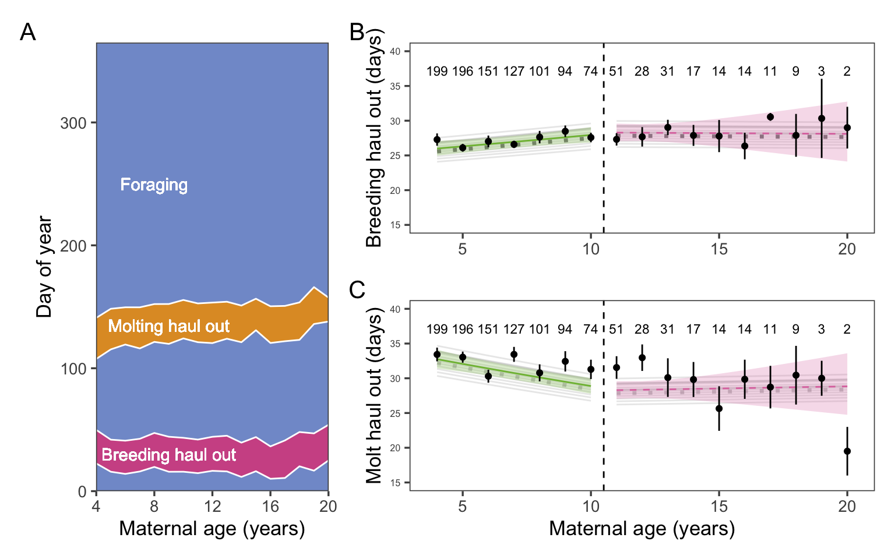
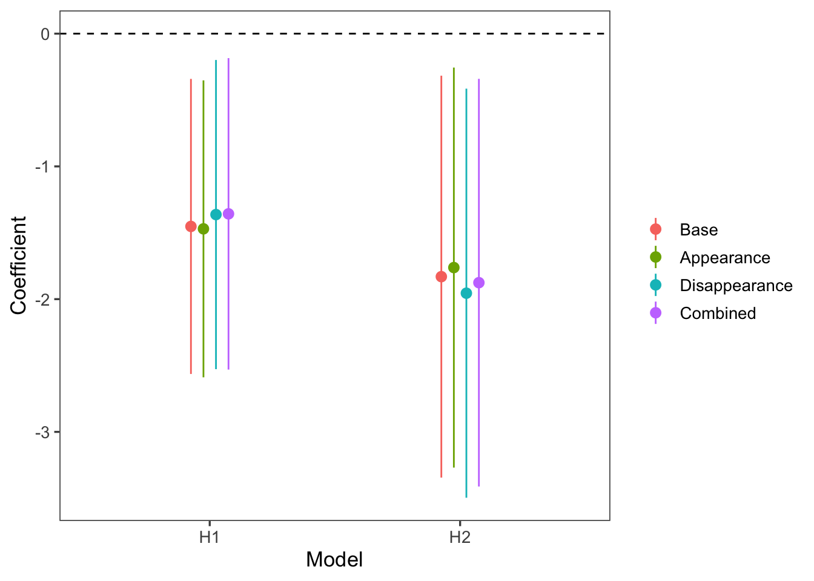

Reproduction frequency and offspring survival decline in elephant seals past prime age
Introduction
Our hypotheses:
Elephant seal reproductive success declines with age.
Reproductive declines persist to the next generation (maternal effect senescence). That is, offspring survival and reproduction decrease with maternal age.
Offspring sex ratios shift towards males with old age.
Annual cycle phenology - specifically, the duration of the molt haulout - will shift for older animals.
Results
n = 1203 distinct animals, with 4404 total observations.
Raw data
Figure 1: A large number of elephant seals from each cohort are tagged during their birth year (yellow) and observations take place for the rest of their lives so that breeding status (greens and blues) can be assigned and compared to age. A: Raw longitudinal data for 1,203 known-age female elephant seals and their observations from birth, to recruitment, to death. B: Histogram of the number of seals in each age class in the dataset.
H1: Reproductive senescence
We predicted that breeding success would decline with age. Based on the literature, we chose age 11 to be the end of prime age and indicate the onset of senescence. If breeding success declined with age, we would expect to see a negative slope post-senescence (Figure 2).
# A tibble: 17 × 9
age age_cat predicted predicted_pop conf_lo conf_hi n perc_pop
<dbl> <fct> <dbl> <dbl> <dbl> <dbl> <int> <dbl>
1 4 Young 0.909 0.928 0.879 0.932 786 0.179
2 5 Young 0.917 0.935 0.891 0.938 731 0.166
3 6 Young 0.925 0.941 0.901 0.943 609 0.138
4 7 Young 0.932 0.946 0.910 0.948 505 0.115
5 8 Young 0.938 0.951 0.917 0.954 399 0.0907
6 9 Young 0.944 0.956 0.924 0.959 331 0.0753
7 10 Young 0.949 0.960 0.929 0.964 253 0.0575
8 11 Old 0.954 0.964 0.933 0.968 202 0.0459
9 12 Old 0.947 0.958 0.926 0.962 159 0.0362
10 13 Old 0.940 0.953 0.916 0.957 122 0.0277
11 14 Old 0.931 0.946 0.904 0.951 93 0.0211
12 15 Old 0.922 0.938 0.887 0.946 63 0.0143
13 16 Old 0.911 0.930 0.867 0.941 55 0.0125
14 17 Old 0.899 0.920 0.842 0.937 35 0.00796
15 18 Old 0.886 0.909 0.813 0.932 27 0.00614
16 19 Old 0.871 0.897 0.779 0.928 20 0.00455
17 20 Old 0.854 0.883 0.740 0.923 8 0.00182
# ℹ 1 more variable: pred_pups <dbl>
Figure 2: Breeding probability for adult female elephant seals increased up to age 11, and decreased above it, providing evidence for reproductive senescence. Black points and error bars show the mean and 95% CI of breeding rates. Sample sizes for each age class are included above the points. Thin gray lines show the mean response for each year of the study (i.e., including the random effect of year). The thick solid lines and shaded areas show the mean response and 95% confidence interval of the fitted model, weighted by the number of seals observed in each year. The unweighted fitted model is shown by the dotted gray line. The weighted model is emphasized because of the large impact of the random effect of year.
[1] 0.0006021375
# A tibble: 2 × 7
age age10 age_cat predicted se pred_lwr pred_upr
<dbl> <dbl> <chr> <dbl> <dbl> <dbl> <dbl>
1 11 0 Old 0.964 0.196 0.948 0.975
2 19 0.8 Old 0.897 0.331 0.819 0.943
# A tibble: 4 × 6
age age10 age_cat year_fct `(Intercept)` predicted
<dbl> <dbl> <chr> <chr> <dbl> <dbl>
1 11 0 Old 2018 -1.22 0.887
2 11 0 Old 2001 1.00 0.986
3 19 0.8 Old 2018 -1.22 0.719
4 19 0.8 Old 2001 1.00 0.959
Sample size n = 4404 observations of 1203 individuals.
H2: Maternal effect senescence
We predicted that reproductive declines would carry over to the next generation - that is, pups born to older mothers would have decreased survival (for female and male pups) and reproductive success (for female pups). Pup survival significantly decreased with maternal age, but pup reproduction did not (Figure 3).
Figure 3: Elephant seal pup survival (A) but not recruitment (B) decreased with maternal age above the threshold age of 11 years. Both males and females were included in the survival analysis, but only females were included for recruitment. This caused some values of recruitment to be higher than survival at the same maternal age. Black points and error bars show means and 95% CI of survival or recruitment for each maternal age. Sample sizes for each age class are included above the points. Thin gray lines show the mean response for each year of the study (i.e., including the random effect of year). Thick dashed and solid lines show the weighted mean response and 95% CI, with solid lines indicating significant trends. The unweighted fitted model is indicated by a dotted gray line. The weighted model is emphasized because of the large impact of the random effect of year.
Sample size for offspring survival was n = 1335 observations of 618 individuals. Sample size for offspring recruitment was n = 636 observations of 421 female individuals.
# A tibble: 2 × 7
age age10 age_cat predicted se pred_lwr pred_upr
<dbl> <dbl> <chr> <dbl> <dbl> <dbl> <dbl>
1 11 0 Old 0.303 0.176 0.236 0.380
2 19 0.8 Old 0.0926 0.556 0.0332 0.233
# A tibble: 4 × 6
age age10 age_cat year_fct `(Intercept)` predicted
<dbl> <dbl> <chr> <chr> <dbl> <dbl>
1 11 0 Old 1994 -0.616 0.190
2 11 0 Old 2016 0.817 0.496
3 19 0.8 Old 1994 -0.616 0.0523
4 19 0.8 Old 2016 0.817 0.188
H3: Changes in pup sex ratio with increased maternal age
We found that as maternal age increases, the pup sex ratio does not change (Figure 4).
Figure 4: Offspring sex ratio trended towards more males with maternal age above the age threshold, but the trend was not significant. Black points and error bars show the mean and 95% CI. Sample sizes for each age class are included above the points. Thin gray lines show the mean response for each year of the study (i.e., including the random effect of year). Thick dashed lines show the weighted mean response and 95% CI; neither trend was significant. The unweighted fitted model is indicated by a dotted gray line. The weighted model is emphasized because of the large impact of the random effect of year.
Sample size n = 1786 observations of 796 individuals.
Note: In the above figure, the population-level and weighted-average lie directly on top of each other. This is because the random effect of year has very little impact on offspring sex ratio, which makes sense biologically. It’s easy to imagine scenarios where reproduction would vary year-to-year, but harder to think of a mechanism linking year and offspring sex ratio.
H4: Phenology
Does the timing of breeding and molting suggest a mechanistic explanation for observed patterns in reproductive and maternal-effect senescence?
We fit a generalized linear mixed-effects model with the duration of a phase (molting or breeding) as the response variable and age, interacting with phase, as the predictor, using year as a random effect. We attempted to fit a model with random effects for both year and individual, but that failed to converge. We assumed the effect of year on phase duration (molting or breeding) was greater than the effect of individual, so we retained year as the random effect.
\[
\begin{align}
d &\sim NB(\mu, k) \\
e^\mu &= \beta_0 + \beta_p a + Zy
\end{align}
\]
Where: \(d\) is the duration of the phase in days, \(NB\) is the negative binomial distribution with location \(\mu\) and dispersion \(k\), \(\beta_0\) is the intercept, \(\beta_p\) is the coefficient for age (\(a\)) by phase (i.e., for \(p\) in “molting” or “breeding”), \(y\) is the year, and \(Z\) is the design matrix relating \(y\) to \(e^\mu\).
# A tibble: 4 × 6
age phase age_cat dur_days dur_days_lwr dur_days_upr
<dbl> <chr> <fct> <dbl> <dbl> <dbl>
1 4 moltdur Young 32.2 30.9 33.5
2 4 breeddur Young 25.6 24.6 26.6
3 10 moltdur Young 28.4 27.3 29.6
4 10 breeddur Young 27.5 26.4 28.6

Figure 5: Neither molting nor breeding haul out duration changed with old age. A: Raw data plotting the observed annual time allocation averaged over all n = 387 individuals. B & C: Points and error bars represent the mean and CI for haul out durations. Sample sizes for each age class are included above the points. Thin gray lines show the mean response for each year of the study (i.e., including the random effect of year). Thick solid and dashed lines represent the mean response and 95% CI of the fitted model, weighted by the number of seals observed per year, with solid lines indicating significant trends. The unweighted fitted model is indicated by a dotted gray line. The weighted model is emphasized because of the large impact of the random effect of year.
Sample size n = 1122 observations of 387 individuals.
Supplemental Material
Detailed model outputs
H1: Reproductive senescence
Generalized linear mixed model fit by maximum likelihood (Laplace
Approximation) [glmerMod]
Family: binomial ( logit )
Formula: observed_int ~ age10:age_cat + (1 | animalID) + (1 | year_fct)
Data: sealdat
Control: glmerControl(optimizer = "bobyqa")
AIC BIC logLik deviance df.resid
2565.7 2597.7 -1277.9 2555.7 4399
Scaled residuals:
Min 1Q Median 3Q Max
-5.9645 0.1771 0.2558 0.3516 0.7488
Random effects:
Groups Name Variance Std.Dev.
animalID (Intercept) 0.4471 0.6687
year_fct (Intercept) 0.6126 0.7827
Number of obs: 4404, groups: animalID, 1203; year_fct, 36
Fixed effects:
Estimate Std. Error z value Pr(>|z|)
(Intercept) 3.2783 0.2015 16.266 < 2e-16 ***
age10:age_catYoung 1.0322 0.2615 3.947 7.91e-05 ***
age10:age_catOld -1.3985 0.4319 -3.238 0.0012 **
---
Signif. codes: 0 '***' 0.001 '**' 0.01 '*' 0.05 '.' 0.1 ' ' 1
Correlation of Fixed Effects:
(Intr) a10:_Y
ag10:g_ctYn 0.604
ag10:g_ctOl -0.373 -0.498
H2: Maternal effect senescence
Generalized linear mixed model fit by maximum likelihood (Laplace
Approximation) [glmerMod]
Family: binomial ( logit )
Formula: pup_surv_int ~ age10:age_cat + (1 | animalID) + (1 | year_fct)
Data: surv_recr_data
Control: glmerControl(optimizer = "bobyqa")
AIC BIC logLik deviance df.resid
1541.3 1567.3 -765.6 1531.3 1330
Scaled residuals:
Min 1Q Median 3Q Max
-0.9900 -0.6116 -0.5005 1.1413 2.6166
Random effects:
Groups Name Variance Std.Dev.
animalID (Intercept) 0.0352 0.1876
year_fct (Intercept) 0.2827 0.5317
Number of obs: 1335, groups: animalID, 618; year_fct, 29
Fixed effects:
Estimate Std. Error z value Pr(>|z|)
(Intercept) -0.8330 0.1786 -4.664 3.1e-06 ***
age10:age_catYoung 0.5222 0.3031 1.723 0.0849 .
age10:age_catOld -1.8111 0.7595 -2.385 0.0171 *
---
Signif. codes: 0 '***' 0.001 '**' 0.01 '*' 0.05 '.' 0.1 ' ' 1
Correlation of Fixed Effects:
(Intr) a10:_Y
ag10:g_ctYn 0.693
ag10:g_ctOl -0.403 -0.461
Generalized linear mixed model fit by maximum likelihood (Laplace
Approximation) [glmerMod]
Family: binomial ( logit )
Formula: pup_recr_int ~ age10:age_cat + (1 | year_fct)
Data: filter(surv_recr_data, pupsex == "F")
Control: glmerControl(optimizer = "bobyqa")
AIC BIC logLik deviance df.resid
574.0 591.8 -283.0 566.0 632
Scaled residuals:
Min 1Q Median 3Q Max
-0.5851 -0.4778 -0.3937 -0.3399 3.8709
Random effects:
Groups Name Variance Std.Dev.
year_fct (Intercept) 0.2695 0.5191
Number of obs: 636, groups: year_fct, 29
Fixed effects:
Estimate Std. Error z value Pr(>|z|)
(Intercept) -1.703041 0.277661 -6.134 8.6e-10 ***
age10:age_catYoung -0.005418 0.512590 -0.011 0.992
age10:age_catOld -2.384120 1.695726 -1.406 0.160
---
Signif. codes: 0 '***' 0.001 '**' 0.01 '*' 0.05 '.' 0.1 ' ' 1
Correlation of Fixed Effects:
(Intr) a10:_Y
ag10:g_ctYn 0.793
ag10:g_ctOl -0.401 -0.384
H3: Offspring sex ratio
Generalized linear mixed model fit by maximum likelihood (Laplace
Approximation) [glmerMod]
Family: binomial ( logit )
Formula: is_male ~ age10:age_cat + (1 | animalID) + (1 | year_fct)
Data: pup_sex_data
AIC BIC logLik deviance df.resid
2479.0 2506.5 -1234.5 2469.0 1781
Scaled residuals:
Min 1Q Median 3Q Max
-1.2156 -1.0311 0.8629 0.9579 1.0761
Random effects:
Groups Name Variance Std.Dev.
animalID (Intercept) 0.002551 0.05051
year_fct (Intercept) 0.022499 0.15000
Number of obs: 1786, groups: animalID, 796; year_fct, 36
Fixed effects:
Estimate Std. Error z value Pr(>|z|)
(Intercept) 0.1736 0.1103 1.574 0.116
age10:age_catYoung 0.2377 0.2258 1.053 0.293
age10:age_catOld 0.1382 0.4465 0.310 0.757
Correlation of Fixed Effects:
(Intr) a10:_Y
ag10:g_ctYn 0.858
ag10:g_ctOl -0.509 -0.462
H4: Phenology
Generalized linear mixed model fit by maximum likelihood (Laplace
Approximation) [glmerMod]
Family: Gamma ( log )
Formula: dur_days ~ age10:phase:age_cat + (1 | year_fct) + (1 | animalID)
Data: .
AIC BIC logLik deviance df.resid
16956.6 17002.3 -8470.3 16940.6 2236
Scaled residuals:
Min 1Q Median 3Q Max
-2.6990 -0.4623 0.0828 0.5862 8.0632
Random effects:
Groups Name Variance Std.Dev.
animalID (Intercept) 0.012680 0.11260
year_fct (Intercept) 0.001418 0.03765
Residual 0.117176 0.34231
Number of obs: 2244, groups: animalID, 387; year_fct, 13
Fixed effects:
Estimate Std. Error t value Pr(>|z|)
(Intercept) 3.326023 0.034249 97.112 < 2e-16 ***
age10:phasebreeddur:age_catYoung 0.120730 0.048599 2.484 0.013 *
age10:phasemoltdur:age_catYoung -0.209050 0.048721 -4.291 1.78e-05 ***
age10:phasebreeddur:age_catOld -0.007083 0.101576 -0.070 0.944
age10:phasemoltdur:age_catOld 0.021409 0.102118 0.210 0.834
---
Signif. codes: 0 '***' 0.001 '**' 0.01 '*' 0.05 '.' 0.1 ' ' 1
Correlation of Fixed Effects:
(Intr) ag10:phsb:_Y ag10:phsm:_Y ag10:phsb:_O
ag10:phsb:_Y 0.633
ag10:phsm:_Y 0.626 0.767
ag10:phsb:_O -0.208 -0.246 -0.245
ag10:phsm:_O -0.209 -0.248 -0.247 0.390
Models’ sensitivity to age of senescence
age_cutoff
H1 (breeding)
H2a (survival)
H2b (recruitment)
H3 (sex ratio)
H4a (molt duration)
H4b (breed duration)
6
0.4657369
0.5089593
0.2667381
0.0674686
0.929424
0.7264834
7
0.1563941
0.3806304
0.3582929
0.0365130
0.929424
0.7264834
8
0.0618207
0.3289862
0.4719041
0.0423191
0.929424
0.7264834
9
0.0105069
0.2378849
0.3139050
0.0362632
0.929424
0.7264834
10
0.0030720
0.0708690
0.1424906
0.0458696
0.929424
0.7264834
11
0.0012043
0.0152245
0.1597364
0.1395860
0.929424
0.7264834
12
0.0009805
0.0112464
0.2713923
0.3551716
0.929424
0.7264834
13
0.0022208
0.0131573
0.3471752
0.5784136
0.929424
0.7264834
14
0.0079533
0.0128804
0.4408445
0.6010242
0.929424
0.7264834
age_cutoff
H1 (breeding)
H2a (survival)
H2b (recruitment)
H3 (sex ratio)
H4a (molt duration)
H4b (breed duration)
6
0.0116076
0.0047392
0.0807780
0.0776630
0.1111111
0.1111111
7
0.0287312
0.0057170
0.0776146
0.1226774
0.1111111
0.1111111
8
0.0385151
0.0061412
0.0758423
0.1322257
0.1111111
0.1111111
9
0.1528577
0.0077153
0.0892352
0.1721974
0.1111111
0.1111111
10
0.2479726
0.0227865
0.1683214
0.1765538
0.1111111
0.1111111
11
0.2886800
0.1187325
0.1765724
0.1048554
0.1111111
0.1111111
12
0.1733800
0.1934515
0.1233795
0.0753757
0.1111111
0.1111111
13
0.0475805
0.2112820
0.1104019
0.0686999
0.1111111
0.1111111
14
0.0106754
0.4294349
0.0978547
0.0697516
0.1111111
0.1111111
age_cutoff
H1 (breeding)
H2a (survival)
H2b (recruitment)
H3 (sex ratio)
H4a (molt duration)
H4b (breed duration)
6
-0.1610933
-0.1794967
-0.5865032
0.3835786
0.0114215
0.0335019
7
-0.3533577
-0.2783076
-0.5728321
0.5137433
0.0114215
0.0335019
8
-0.5289428
-0.3639777
-0.5297607
0.5918772
0.0114215
0.0335019
9
-0.8244579
-0.5296766
-0.9280275
0.7329648
0.0114215
0.0335019
10
-1.0969341
-1.0255174
-1.8648699
0.8581228
0.0114215
0.0335019
11
-1.3985063
-1.8316119
-2.3841205
0.7828321
0.0114215
0.0335019
12
-1.6922271
-2.5961003
-2.3282490
0.6191012
0.0114215
0.0335019
13
-1.9099328
-3.5639932
-2.6366545
0.4827083
0.0114215
0.0335019
14
-2.0787231
-5.7676986
-2.8662877
0.6262323
0.0114215
0.0335019
Figure 6: Model sensitivity to onset of senescence. Age at onset of senescence on the x-axis, p-value for the coefficient of the interaction (age category = post-senescence) x (response variable) on the y-axis. Statistical significance (p = 0.05) indicated by dashed line. Hypotheses H1 (reproductive senescence), H2b (maternal-effect senescence; offspring recruitment), and H3 (offspring sex ratio) were insensitive to choice of age for onset of senescence. Hypothesis H2a (maternal-effect senescence; offspring survival) was significantly supported for onset of senescence age 11+. At age 10, the p-vale for the coefficient of the interaction (age category = post-senescence) x (offspring survival) was 0.058.
Selective appearance and disappearance
Age-dependent life history shifts can result from within- or between-animal changes (Pol and Verhulst 2006). We hypothesized age-dependent changes in reproduction were due to senescence, i.e. within-animal changes. However, it is possible that selective appearance or disappearance of animals in the population can create the same pattern. For example, if animals the breed more frequently have lower survival, then older animals will reproduce less frequently not because of senescence but rather because infrequent breeders disproportionately survive to older ages (i.e. selective disappearance). We tested whether our significant results (reproductive senescence, maternal effect senescence in pup survival) were influenced by selective appearance and disappearance, following the methods of Pol and Verhulst (2006), by adding terms for age at first and last reproduction, respectively. If our results are due to selective appearance/disappearance instead of senescence, then the 95% CI for the coefficient of age in the old age class in these models will overlap 0.

Figure 7: The coefficient for age in the old age class in models accounting for selective appearance and disappearance. Red and blue indicate reproductive senescence (H1) and maternal effect senescence (H2a), respectively. Compared to the base model, the appearance model includes a term for age at first reproduction, the disappearance model includes a term for age at last reproduction, and the combined model includes both.
There was no evidence for selective appearance or disappearance influencing the relationship between maternal age and probability of reproduction or offspring survival. The 95% CI of the coefficient for age in the old age class did not overlap 0 for either hypothesis in any of the selective (dis)appearance models Figure 7. Therefore the observed patterns are consistent with the senescence hypothesis (i.e., within-animal change with age).
Chronological versus biological age
The chronological age of an individual may not reflect their biological age because aging rates vary within populations (Martin and Festa-Bianchet 2011). Years-to-death, a proxy for biological age, may therefore be a better predictor for senescence patterns than chronological age. We repeated our analysis for the reproductive senescence hypothesis using biological age, setting the breakpoint for senescence at biological age -7 years (i.e. 7 years prior to final observation), based on visual inspection of the raw data. This required us to limit our sample to animals with known longevity (i.e., last observation in 2020 or earlier), which reduced our sample size to 3167 observations of 934 distinct animals. Subsequently, we fit the model for breakpoints at all biological ages -12 to -3 years, to assess whether our results were sensitive to the choice of breakpoint. Finally, we re-fit the chronological reproductive senescence model using the known-longevity dataset and compared chronological versus biological age models using AIC.
Figure 8: Breeding probability over biological age. Points and error bars are the mean ± SE of observed breeding proportions within age classes. The vertical dashed line indicates the threshold for senescence. Solid lines and ribbons are the mean and 95% CI of the population-level breeding probability, estimated by a GLMM with random effects for individual and year. The dashed lines represent the mean of yearly breeding probabilities, weighted by the number of seals observed each year, which should match the observed data more closely than the population-level probabilities.
The biological age model did not support the reproductive senescence hypothesis. The coefficient for biological age among older animals (biological age > -7 years) was -1.246 (-2.136 - -0.355) (95% CI) which was not significantly different than 0 (p = 0.997). Choice of breakpoint for senescence did not affect the significance of this coefficient. For breakpoints -12 to -3 years, p reached a minimum at biological age -7 years (see table above).
The chronological age model outperformed the biological age model according to AIC.
Based on these results, we find there is evidence to support the reproductive senescence hypothesis based on chronological age. The biological age proxy, years-to-death, should be a better predictor of senescence than chronological age if most mortality is age-related. However, adult elephant seal mortality is largely influenced by extrinsic factors, primarily food availability (Colegrove, Greig, and Gulland 2005; Holser et al. 2021). Poor foraging conditions during El Niño years, for example, may increase mortality rates among animals whose biological age is not yet advanced. As result, the years-to-death proxy for biological age likely conflates many biologically young and old animals that died due to extrinsic factors. More accurate measures of biological age, such as telomere length (Jylhävä, Pedersen, and Hägg 2017), may be necessary to investigate senescence in elephant seals and other species with high extrinsic sources of mortality from a non-chronological perspective.
Detection frequency
Not all seals were detected in all years. A non-detection year during the seal’s lifespan (i.e. an unobserved year between the first and last observed years) could represent an unobserved animal at Año Nuevo or temporary emigration. In either case, the animal may or may not have reproduced that year. By excluding these unobserved animals, our inferences for H1 (reproductive senescence) may be biased if detectability varies with age and/or by breeding state. Here, we assess those potential biases.
Generalized linear mixed model fit by maximum likelihood (Laplace
Approximation) [glmerMod]
Family: binomial ( logit )
Formula: observed ~ age10:age_cat + (1 | year_fct) + (1 | animalID)
Data: detection_seals
AIC BIC logLik deviance df.resid
3923.1 3954.4 -1956.6 3913.1 3813
Scaled residuals:
Min 1Q Median 3Q Max
-4.4441 -0.5583 0.3442 0.5188 3.3715
Random effects:
Groups Name Variance Std.Dev.
animalID (Intercept) 0.8842 0.9403
year_fct (Intercept) 0.9135 0.9558
Number of obs: 3818, groups: animalID, 561; year_fct, 35
Fixed effects:
Estimate Std. Error z value Pr(>|z|)
(Intercept) 1.0008 0.1933 5.177 2.26e-07 ***
age10:age_catYoung -0.9252 0.2104 -4.397 1.10e-05 ***
age10:age_catOld -0.5619 0.3908 -1.438 0.15
---
Signif. codes: 0 '***' 0.001 '**' 0.01 '*' 0.05 '.' 0.1 ' ' 1
Correlation of Fixed Effects:
(Intr) a10:_Y
ag10:g_ctYn 0.424
ag10:g_ctOl -0.251 -0.423
Generalized linear mixed model fit by maximum likelihood (Laplace
Approximation) [glmerMod]
Family: binomial ( logit )
Formula: observed ~ age10 + (1 | year_fct) + (1 | animalID)
Data: detection_seals
AIC BIC logLik deviance df.resid
3921.6 3946.6 -1956.8 3913.6 3814
Scaled residuals:
Min 1Q Median 3Q Max
-4.3877 -0.5496 0.3426 0.5183 3.3391
Random effects:
Groups Name Variance Std.Dev.
animalID (Intercept) 0.8867 0.9416
year_fct (Intercept) 0.9194 0.9588
Number of obs: 3818, groups: animalID, 561; year_fct, 35
Fixed effects:
Estimate Std. Error z value Pr(>|z|)
(Intercept) 1.0506 0.1807 5.815 6.06e-09 ***
age10 -0.8169 0.1440 -5.672 1.41e-08 ***
---
Signif. codes: 0 '***' 0.001 '**' 0.01 '*' 0.05 '.' 0.1 ' ' 1
Correlation of Fixed Effects:
(Intr)
age10 0.249
First, we tested whether detection probability was related to age. We found detection probalities decreased with age (i.e., older seals are less likely to be detected). For this analysis, we excluded the last year each animal was observed. Then, for all years between animals’ age 4 year to the year prior to final observation, we determined whether each animal was detected. We estimated the effect of age on detection probability using a GLMM (binomial response, logit link) with an interaction between age and age category (young = age < 11, old = age > 11) and random effects for year and animal (Figure 9). The coefficient for age was not significantly different than 0 for animals older than 11, but detection probability decreased significantly with age up to age 11. The change in detection probability from age 11 to 19 was 70.1% (61.7 - 77.3%) to 59.9% (44.4% - 73.7%).
Figure 9: Detection probabilities decreased with age for young, but not old, animals. Points and error bars represent the proportion of detected animals with 95% CI. The green and pink lines and shaded areas are the mean and 95% CI probability of an animal being detected (GLMM with random effect of year, weighted by number of seals observed each year), color-coded by age category. The dotted line is the mean response of the unweighted predictions. Numbers at the top indicate number of seals of each age. See text for model details.
The pattern of unobserved animals decreasing with age means it is highly unlikely our inferences about reproductive senescence are due to partial detection.
Among the animals in this study, breeders hauled out for longer than non-breeders (1st - 3rd quartile: breeders 25 - 31 days; non-breeders 10 - 26 days). This extended period of time on the beach makes them more accessible to observers. Furthermore, northern elephant seals exhibit a high degree of site fidelity. Once they recruit to a breeding colony, temporary emigration is rare. Breeding animals were resighted 18.9 (7 - 28) times per year, compared to 8.6 (3 - 12) for non-breeders (mean, 1st - 3rd quartile), which suggests that breeders are more readily observable than non-breeders.
Breakpoint vs quadratic vs linear
H1: Reproductive senescence
Estimate Std. Error z value Pr(>|z|)
(Intercept) 2.9023415 0.1740385 16.676430 1.945018e-62
age10 0.2665427 0.1727485 1.542953 1.228422e-01
Estimate Std. Error z value Pr(>|z|)
(Intercept) 3.0829669 0.1803523 17.094141 1.640961e-65
poly(age10, 2, raw = TRUE)1 -0.1134344 0.1829231 -0.620121 5.351781e-01
poly(age10, 2, raw = TRUE)2 -1.3154889 0.3381634 -3.890098 1.002036e-04
[1] "Age peak (H1) = 10.6"
H2: Maternal effect senescence
Estimate Std. Error z value Pr(>|z|)
(Intercept) -1.10634518 0.1455802 -7.5995569 2.971464e-14
age10 -0.04932588 0.2057500 -0.2397369 8.105342e-01
Estimate Std. Error z value Pr(>|z|)
(Intercept) -1.9293825 0.2219267 -8.693783 3.505657e-18
age10 -0.4506991 0.3817415 -1.180639 2.377460e-01
Estimate Std. Error z value Pr(>|z|)
(Intercept) -1.0176772 0.1530649 -6.648666 2.957613e-11
poly(age10, 2, raw = TRUE)1 -0.4693668 0.3134354 -1.497491 1.342655e-01
poly(age10, 2, raw = TRUE)2 -1.0817482 0.5584824 -1.936942 5.275240e-02
[1] "Age peak (H2a) = 8.8"
Estimate Std. Error z value Pr(>|z|)
(Intercept) -1.8873468 0.2308794 -8.1745989 2.968517e-16
poly(age10, 2, raw = TRUE)1 -0.8114974 0.6472607 -1.2537413 2.099361e-01
poly(age10, 2, raw = TRUE)2 -0.7712672 1.0382858 -0.7428274 4.575862e-01
[1] "Age peak (H2b) = 5.7"
H3: Offspring Sex Ratio
Estimate Std. Error z value Pr(>|z|)
(Intercept) 0.1602045 0.07687128 2.084062 0.03715457
age10 0.2094904 0.15264782 1.372377 0.16994603
Estimate Std. Error z value Pr(>|z|)
(Intercept) -1.0176772 0.1530649 -6.648666 2.957613e-11
poly(age10, 2, raw = TRUE)1 -0.4693668 0.3134354 -1.497491 1.342655e-01
poly(age10, 2, raw = TRUE)2 -1.0817482 0.5584824 -1.936942 5.275240e-02
Where the column names are the age of the seal in years, and row values indicate mean±SD (n). To get the mean and 95% CI duration of nursing, we pooled the samples for mothers age 4 and up (i.e., excluded 2- and 3-year olds).
The formulas we used for pooling the variances come from (O’Neill 2014).
[1] "26.8 (95%CI: 23.5 - 30.1)"
Population dynamics
What effect does senescence have on reproduction and offspring survival? First, calculate the total pup production of the age-structured population in one year. Then, let’s pretend senescence doesn’t happen. In this hypothetical population, all animals older than 11 years old reproduce like an 11 year old. How many more pups would that population produce? And how many more of those pups would survive to reproductive age?
The observed pup production (in the age-structured population) is:
Where \(F\) represents fertility, described by pup production per mother per year by the age-structured population. \(a\) is age, \(b\) is estimated breeding percentage, and \(n\) is the number of mothers in that age class.
Hypothetical pup production in a non-senescing population is:
Similarly, to account for the influence of maternal effects (\(M\)), we add a term \(s\) for offspring survival to estimate the observed and hypothetical quantity of pups that survive to adulthood.
Colegrove, Kathleen M., Denise J. Greig, and Frances M. D. Gulland. 2005. “Causes of Live Strandings of Northern Elephant Seals (<I>Mirounga Angustirostris</I>) and Pacific Harbor Seals (<I>Phoca Vitulina</I>) Along the Central California Coast, 1992-2001.”Aquatic Mammals 31 (1): 1–10. https://doi.org/10.1578/am.31.1.2005.1.
Holser, Rachel R., Daniel E. Crocker, Patrick W. Robinson, Richard Condit, and Daniel P. Costa. 2021. “Density-Dependent Effects on Reproductive Output in a Capital Breeding Carnivore, the Northern Elephant Seal (Mirounga Angustirostris).”Proceedings of the Royal Society B: Biological Sciences 288 (1960). https://doi.org/10.1098/rspb.2021.1258.
Martin, Julien G. A., and Marco Festa-Bianchet. 2011. “Age-Independent and Age-Dependent Decreases in Reproduction of Females.”Ecology Letters 14 (6): 576–81. https://doi.org/10.1111/j.1461-0248.2011.01621.x.
Pol, M. van de, and S. Verhulst. 2006. “Age-Dependent Traits: A New Statistical Model to Separate Within- and Between-Individual Effects.”The American Naturalist 167 (5): 766–73. https://doi.org/10.1086/503331.
Reiter, Joanne, Kathy J. Panken, and Burney J. Le Boeuf. 1981. “Female Competition and Reproductive Success in Northern Elephant Seals.”Animal Behaviour 29 (3): 670–87. https://doi.org/10.1016/s0003-3472(81)80002-4.
Source Code
---title: "Reproduction frequency and offspring survival decline in elephant seals past prime age"format: html: echo: false fig-width: 7 fig-height: 5 code-fold: true code-tools: true warning: false toc: trueeditor: visualbibliography: references.bib---```{r}#| label: setup#| include: false library(ggthemes)library(cowplot)library(lme4)library(lmerTest) # Loading this library will automatically append p-values to lmer models estimated using something called Satterthwaite's methodlibrary(merTools)library(tidyverse)library(ggeffects)library(ggridges)library(patchwork)library(qpcR)source(here::here("R/format.R"))theme_set(theme_few(base_size =13))age_senesce <-11sealdat <-read_csv(here::here("data/raw/128L pull 2023_12_05.csv"), show_col_types =FALSE) %>%mutate(observed =if_else(observed =="B", "Breeder", "Non-breeder"), observed_int =if_else(observed =="Breeder", 1, 0), pup_survived = pupseeneveragain >0) %>%filter(age >3, year >1987) %>%mutate(animalID =factor(animalID),year_fct =factor(year),age10 = (age - age_senesce) /10,age_cat =factor(age >= age_senesce, labels =c("Young", "Old"))) %>%group_by(animalID) %>%mutate(firstrepro =ifelse(max(year) <2020&&any(observed_int ==1),min(age[observed_int ==1]),NA),lastrepro =ifelse(max(year) <2020&&any(observed_int ==1),max(age[observed_int ==1]),NA),lastobs =ifelse(max(year) <2020, max(age), NA)) %>%ungroup()resight <-read_csv(here::here("data/raw/fullresights.csv"), show_col_types =FALSE) %>%select(animalID, resightID, season, date, timeofyear, calyear, yday) %>%mutate(animalID =as.factor(animalID))```# IntroductionOur hypotheses:1. Elephant seal reproductive success declines with age.2. Reproductive declines persist to the next generation (maternal effect senescence). That is, offspring survival and reproduction decrease with maternal age.3. Offspring sex ratios shift towards males with old age.4. Annual cycle phenology - specifically, the duration of the molt haulout - will shift for older animals.# Resultsn = `r n_distinct(sealdat$animalID)` distinct animals, with `r n_distinct(sealdat)` total observations.### Raw data```{r}#| label: fig-raw-data#| fig-width: 9#| fig-cap: "A large number of elephant seals from each cohort are tagged during their birth year (yellow) and observations take place for the rest of their lives so that breeding status (greens and blues) can be assigned and compared to age. A: Raw longitudinal data for 1,203 known-age female elephant seals and their observations from birth, to recruitment, to death. B: Histogram of the number of seals in each age class in the dataset."sighting_img <- sealdat %>%group_by(animalID) %>%summarize(yearborn = yearborn[1],first_obs =min(year),last_obs =max(year),.groups ="keep") %>%reframe(yearborn = yearborn,year = yearborn:last_obs,age = year - yearborn,prerecruit = year < first_obs) %>%left_join(sealdat %>%group_by(animalID, year) %>%summarize(observed_int =max(observed_int),.groups ="drop"),by =c("animalID", "year")) %>%mutate(observed =case_when( age ==0~"Born", prerecruit ~"Pre-recruit", observed_int ==0~"Non-breeder", observed_int ==1~"Breeder",is.na(observed_int) ~"Unobserved" ),observed =factor(observed, levels =c("Born","Pre-recruit","Non-breeder","Breeder","Unobserved")) ) %>%group_by(animalID) %>%mutate(lastrepro =max(age),yearborn =na.omit(yearborn)[1]) %>%ungroup() %>%arrange(yearborn, lastrepro, animalID) %>%mutate(animalID =factor(animalID, levels =unique(animalID))) %>%filter(year >1987) %>%ggplot(aes(year, animalID)) +geom_raster(aes(fill = observed)) +scale_fill_viridis_d(direction =1) +guides(fill =guide_legend(position ="inside", direction ="horizontal",ncol =1,byrow =TRUE)) +labs(y ="Individual") +theme(axis.text.y =element_blank(),axis.ticks.y =element_blank(),axis.title.x =element_blank(),legend.title =element_blank(),legend.position =c(0.1, 0.95),legend.justification =c(0, 1),legend.background =element_blank(),legend.key.size =unit(4, "mm"),legend.text =element_text(size =8))age_dist <- sealdat %>%filter(age <22) %>%group_by(age) %>%count(age) %>%ggplot(aes(x = age, y = n)) +geom_col(fill ="grey50") +labs(x ="Age (Years)", y ="Number of individuals") +theme()(sighting_img | age_dist) +plot_layout(widths =c(2, 1)) +plot_annotation(tag_levels ="A")```### H1: Reproductive senescenceWe predicted that breeding success would decline with age. Based on the literature, we chose age `r age_senesce` to be the end of prime age and indicate the onset of senescence. If breeding success declined with age, we would expect to see a negative slope post-senescence (@fig-breeding-mod).```{r}#| label: breeding-mod# Fit GLMMs to the data with binary variable indicating before and after onset # of senescence. We a priori chose age 11 for senescence (age_senesce).breed_age_mod <-glmer( observed_int ~ age10 : age_cat + (1| animalID) + (1| year_fct), sealdat,family ="binomial",control =glmerControl(optimizer ="bobyqa"))summary(breed_age_mod)$coefficients``````{r}#| label: fig-breeding-mod#| fig-cap: "Breeding probability for adult female elephant seals increased up to age 11, and decreased above it, providing evidence for reproductive senescence. Black points and error bars show the mean and 95% CI of breeding rates. Sample sizes for each age class are included above the points. Thin gray lines show the mean response for each year of the study (i.e., including the random effect of year). The thick solid lines and shaded areas show the mean response and 95% confidence interval of the fitted model, weighted by the number of seals observed in each year. The unweighted fitted model is shown by the dotted gray line. The weighted model is emphasized because of the large impact of the random effect of year."# Summarize the raw databreed_nonbreed <- sealdat %>%group_by(age) %>%summarize(n_observed =n(),n_breed =sum(observed_int),perc_breed = n_breed / n_observed,breed_lwr =binom.test(n_breed, n_observed)$conf.int[1],breed_upr =binom.test(n_breed, n_observed)$conf.int[2]) %>%filter(age <=20)#Create sample size data framen_breed <- sealdat %>%filter(age <=20) %>%count(age)# Create ANNUAL (i.e. rand effect of year only) predictionsbreed_pred_years <-ggpredict( breed_age_mod, terms =c("age10 [all]", "age_cat", "year_fct"),type ="random") %>%as_tibble() %>%mutate(age = x *10+ age_senesce,age_cat =factor(group, levels =c("Young", "Old")),year_fct =factor(facet)) %>%filter((age_cat =="Young"& age < age_senesce) | (age_cat =="Old"& age >= age_senesce), age <=20)# Create WEIGHTED-AVERAGE predictions using years' random effects# ggpredict can't do that for confidence intervals# create prediction gridbreed_grid <-expand_grid(age =4:20,year_fct =factor(1988:2023)) %>%mutate(age10 = (age - age_senesce) /10,age_cat =factor(ifelse(age < age_senesce, "Young", "Old"),levels =c("Young", "Old")))seal_years <-count(sealdat, year_fct)breed_pred_wgt <- breed_grid %>%mutate(predicted =predict(breed_age_mod, newdata = breed_grid,re.form =~ (1| year_fct)),predicted_se =suppressWarnings(# warning: "se.fit computation uses an approximation to estimate the sampling distribution of the parameters"predict(breed_age_mod, newdata = breed_grid,re.form =NA,se.fit =TRUE) )$se.fit,predicted_pop =predict(breed_age_mod, newdata = breed_grid,re.form =NA),conf_lo = predicted -1.96* predicted_se,conf_hi = predicted +1.96* predicted_se) %>%left_join(seal_years, by ="year_fct") %>%group_by(age, age_cat) %>%summarize(across(c(predicted, predicted_pop, conf_lo, conf_hi), \(x) weighted.mean(x, n)),.groups ="drop") %>%# invert logitmutate(across(c(predicted, predicted_pop, conf_lo, conf_hi), family(breed_age_mod)$linkinv)) %>%left_join(n_breed, by ="age") breed_pred_wgt %>%filter(age >9, age <13) %>%summarize(mean_breed =mean(predicted))breed_pred_wgt %>%mutate(perc_pop = n/sum(n), pred_pups = n * predicted)breed_plot <-ggplot(breed_pred_wgt, aes(age, predicted)) +# Predictions for individual yearsgeom_line(aes(group =interaction(age_cat, year_fct)), breed_pred_years,alpha =0.1) +# Weighted model (CI and mean response)geom_ribbon(aes(fill = age_cat, ymin = conf_lo, ymax = conf_hi), alpha =0.5) +geom_line(aes(color = age_cat),linewidth =1.2) +# Population-level mean responsegeom_line(aes(y = predicted_pop, group = age_cat),linetype ="dotted",linewidth =1.2,alpha =0.5) +# Summarized raw datageom_pointrange(aes(y = perc_breed,ymin = breed_lwr,ymax = breed_upr), breed_nonbreed) +geom_vline(xintercept = age_senesce -0.5, linetype ="dashed") +scale_y_continuous("Breeding probability", labels = scales::percent,breaks =seq(0.4, 1.0, by =0.1)) +scale_color_manual(values =c("#7fbc41", "#de77ae")) +scale_fill_manual(values =c("#7fbc41", "#de77ae")) +coord_cartesian(ylim =c(0.68, 1.02)) +labs(x ="Age (years)") +theme(legend.position ="none") +geom_text(aes(label = n), y =1, vjust =-0.5)breed_plot#ggsave("outputs/repro_senesce.svg", breed_plot, width = 13, height = 6, units = "in")``````{r}#| label: h1-pred-deetspnorm(summary(breed_age_mod)$coef["age10:age_catOld", "z value"])#Overall decline 11-19tibble(age =c(11, 19),age10 = (age - age_senesce) /10,age_cat ="Old") %>%# logit-scale predictionsmutate(predicted =predict(breed_age_mod, newdata = .,re.form =NA),se =suppressWarnings(predict(breed_age_mod, newdata = .,se.fit =TRUE,re.form =NA)$se.fit),pred_lwr = predicted -1.96* se,pred_upr = predicted +1.96* se,# Invert the logitacross(c(predicted, pred_upr, pred_lwr), family(breed_age_mod)$linkinv))#Difference between years best_worst_yr <-ranef(breed_age_mod)$year_fct %>%as_tibble(rownames ="year_fct") %>%arrange(`(Intercept)`) %>%slice(1, nrow(.))tibble(age =c(11, 19),age10 = (age - age_senesce) /10,age_cat ="Old") %>%cross_join(best_worst_yr) %>%mutate(predicted =predict(breed_age_mod, newdata = .,type ="response", re.form =~ (1| year_fct)))```Sample size n = `r nrow(sealdat)` observations of `r n_distinct(sealdat$animalID)` individuals.### H2: Maternal effect senescenceWe predicted that reproductive declines would carry over to the next generation - that is, pups born to older mothers would have decreased survival (for female and male pups) and reproductive success (for female pups). Pup survival significantly decreased with maternal age, but pup reproduction did not (@fig-repro-age).```{r}#| label: repro-age# Isolate pup survival/recruitment surv_recr_data <- sealdat %>%drop_na(pupID) %>%# Only pups born 2016 or earlier (otherwise survival biased)filter(pupyearborn <=2016) %>%filter(age <20) %>%mutate(pup_surv_int =as.integer(pup_survived),pup_recr_int =as.integer(puprecruited)) # Fit pup *survival* modelpup_surv_mod <-glmer( pup_surv_int ~ age10 : age_cat + (1| animalID) + (1| year_fct), surv_recr_data,family ="binomial",control =glmerControl(optimizer ="bobyqa"))# Fit pup *recruitment* model (female offspring only)pup_recr_mod <-glmer(# NOTE: no random effect for individual bc singular fit# In survival model, 93 individuals (15%) had >3 pups (male+female pups)# In recruit model, only 17 individuals (4%) had >3 pups (female pups only) pup_recr_int ~ age10 : age_cat + (1| year_fct),filter(surv_recr_data, pupsex =="F"),family ="binomial",control =glmerControl(optimizer ="bobyqa"))"Survival"summary(pup_surv_mod)$coefficients"Recruitment"summary(pup_recr_mod)$coefficients#survival 1 tailedpnorm(summary(pup_surv_mod)$coef["age10:age_catOld", "z value"])#recruit 1 tailedpnorm(summary(pup_recr_mod)$coef["age10:age_catOld", "z value"])``````{r}#| label: fig-repro-age#| fig-width: 8#| fig-height: 8#| fig-cap: "Elephant seal pup survival (A) but not recruitment (B) decreased with maternal age above the threshold age of 11 years. Both males and females were included in the survival analysis, but only females were included for recruitment. This caused some values of recruitment to be higher than survival at the same maternal age. Black points and error bars show means and 95% CI of survival or recruitment for each maternal age. Sample sizes for each age class are included above the points. Thin gray lines show the mean response for each year of the study (i.e., including the random effect of year). Thick dashed and solid lines show the weighted mean response and 95% CI, with solid lines indicating significant trends. The unweighted fitted model is indicated by a dotted gray line. The weighted model is emphasized because of the large impact of the random effect of year."# Summarize the raw datasurv_summ <- surv_recr_data %>%group_by(age) %>%filter(age <=19) %>%summarize(n_pups =n(), n_surv =sum(pup_surv_int),perc_surv = n_surv / n_pups, surv_lwr =binom.test(n_surv, n_pups)$conf.int[1],surv_upr =binom.test(n_surv, n_pups)$conf.int[2])recr_summ <- surv_recr_data %>%filter(pupsex =="F") %>%group_by(age) %>%summarize(n_fpups =n(), n_recr =sum(pup_recr_int),perc_recr = n_recr / n_fpups, recr_lwr =binom.test(n_recr, n_fpups)$conf.int[1],recr_upr =binom.test(n_recr, n_fpups)$conf.int[2])#Create sample size data framen_surv <- surv_recr_data %>%filter(age <=19) %>%count(age)# Create pup survival predictions (population-level and weighted by year)surv_grid <-expand_grid(age =4:19,year_fct =factor(1988:2016)) %>%mutate(age10 = (age - age_senesce) /10,age_cat =factor(ifelse(age < age_senesce, "Young", "Old"),levels =c("Young", "Old")))surv_years <-count(surv_recr_data, year_fct)surv_pred_wgt <- surv_grid %>%mutate(predicted =predict(pup_surv_mod, newdata = surv_grid,re.form =~ (1| year_fct)),predicted_se =suppressWarnings(# warning: "se.fit computation uses an approximation to estimate the sampling distribution of the parameters"predict(pup_surv_mod, newdata = surv_grid,re.form =NA,se.fit =TRUE), )$se.fit,predicted_pop =predict(pup_surv_mod, newdata = surv_grid,re.form =NA),conf_lo = predicted -1.96* predicted_se,conf_hi = predicted +1.96* predicted_se) %>%left_join(surv_years, by ="year_fct") %>%group_by(age, age_cat) %>%summarize(across(c(predicted, predicted_pop, conf_lo, conf_hi), \(x) weighted.mean(x, n)),.groups ="drop") %>%# invert logitmutate(across(c(predicted, predicted_pop, conf_lo, conf_hi), family(pup_surv_mod)$linkinv)) %>%left_join(n_surv, by ="age")# Predictions for each year (random effect)surv_pred_years <-ggpredict( pup_surv_mod,terms =c("age10 [all]", "age_cat", "year_fct [all]"),type ="random",interval ="confidence") %>%as_tibble() %>%mutate(age = x *10+ age_senesce,age_cat = group,year_fct = facet) %>%filter((age_cat =="Young"& age < age_senesce) | (age_cat =="Old"& age >= age_senesce), age <=20)fig_surv <-ggplot(surv_pred_wgt, aes(age, predicted)) +# Individual yearsgeom_line(aes(group =interaction(age_cat, year_fct)), surv_pred_years,alpha =0.1) +# Weighted model (confidence interval and mean response)geom_ribbon(aes(fill = age_cat, ymin = conf_lo, ymax = conf_hi), alpha =0.2) +geom_line(aes(color = age_cat, linetype = age_cat), linewidth =1.2) +# Population-level mean responsegeom_line(aes(y = predicted_pop, group = age_cat),linetype ="dotted", linewidth =1.2, alpha =0.5) +# Raw datageom_pointrange(aes(y = perc_surv, ymin = surv_lwr, ymax = surv_upr), surv_summ) +# Senescence thresholdgeom_vline(xintercept = age_senesce -0.5, linetype ="dashed") +scale_y_continuous("Offspring survival", labels = scales::percent) +scale_color_manual(values =c("#7fbc41", "#de77ae")) +scale_fill_manual(values =c("#7fbc41", "#de77ae")) +scale_linetype_manual(values =c("dashed", "solid")) +coord_cartesian(ylim =c(0, 0.6)) +theme(legend.position ="none", axis.title.x =element_blank()) +geom_text(aes(label = n), y =0.6, vjust =1, nudge_x =0.2)#Create sample size data framen_recruit <- surv_recr_data %>%filter(pupsex =="F") %>%count(age)n_recruit_indiv <- surv_recr_data %>%filter(pupsex =="F") %>%group_by(animalID)# Create pup recruitment predictions (population-level and weighted by year)recr_grid <-expand_grid(age =4:19,year_fct =factor(1988:2016)) %>%mutate(age10 = (age - age_senesce) /10,age_cat =factor(ifelse(age < age_senesce, "Young", "Old"),levels =c("Young", "Old")))recr_years <- surv_recr_data %>%filter(pupsex =="F") %>%count(year_fct)recr_pred <- recr_grid %>%mutate(predicted =predict(pup_recr_mod, newdata = recr_grid,re.form =~ (1| year_fct)),predicted_se =suppressWarnings(# warning: "se.fit computation uses an approximation to estimate the sampling distribution of the parameters"predict(pup_recr_mod, newdata = recr_grid,re.form =NA,se.fit =TRUE), )$se.fit,predicted_pop =predict(pup_recr_mod, newdata = recr_grid,re.form =NA),conf_lo = predicted -1.96* predicted_se,conf_hi = predicted +1.96* predicted_se) %>%left_join(recr_years, by ="year_fct") %>%group_by(age, age_cat) %>%summarize(across(c(predicted, predicted_pop, conf_lo, conf_hi), \(x) weighted.mean(x, n)),.groups ="drop") %>%# invert logitmutate(across(c(predicted, predicted_pop, conf_lo, conf_hi), family(pup_recr_mod)$linkinv)) %>%left_join(n_recruit, by ="age")# Predictions for each year (random effect)recr_pred_years <-ggpredict( pup_recr_mod,terms =c("age10 [all]", "age_cat", "year_fct [all]"),type ="random",interval ="confidence") %>%as_tibble() %>%mutate(age = x *10+ age_senesce,age_cat = group,year_fct = facet) %>%filter((age_cat =="Young"& age < age_senesce) | (age_cat =="Old"& age >= age_senesce), age <=20)fig_recr <-ggplot(recr_pred, aes(age, predicted)) +# Individual yearsgeom_line(aes(group =interaction(age_cat, year_fct)), recr_pred_years,alpha =0.1) +# Weighted model (confidence interval and mean response)geom_ribbon(aes(fill = age_cat, ymin = conf_lo, ymax = conf_hi), alpha =0.2) +geom_line(aes(color = age_cat), linetype ="dashed", linewidth =1.2) +# Population-level mean responsegeom_line(aes(y = predicted_pop, group = age_cat),linetype ="dotted", linewidth =1.2, alpha =0.5) +# Raw datageom_pointrange(aes(y = perc_recr, ymin = recr_lwr, ymax = recr_upr), recr_summ) +geom_vline(xintercept = age_senesce -0.5, linetype ="dashed") +scale_y_continuous("Offspring recruitment", labels = scales::percent) +scale_color_manual(values =c("#7fbc41", "#de77ae")) +scale_fill_manual(values =c("#7fbc41", "#de77ae")) +coord_cartesian(ylim =c(0, 0.6)) +labs(x ="Age (years)") +theme(legend.position ="none") +geom_text(aes(label = n), y =0.6, vjust =1, nudge_x =0.2)(fig_surv | fig_recr) +plot_annotation(tag_levels ="A") +plot_layout(ncol =1, nrow =2)```Sample size for offspring survival was n = `r nrow(surv_recr_data)` observations of `r n_distinct(surv_recr_data$animalID)` individuals. Sample size for offspring recruitment was n = `r n_distinct(n_recruit_indiv)` observations of `r n_distinct(n_recruit_indiv$animalID)` female individuals.```{r}#| label: h2-pred-deets#Overall decline 11-19tibble(age =c(11, 19),age10 = (age - age_senesce) /10,age_cat ="Old") %>%# logit-scale predictionsmutate(predicted =predict(pup_surv_mod, newdata = .,re.form =NA),se =suppressWarnings(predict(pup_surv_mod, newdata = .,se.fit =TRUE,re.form =NA)$se.fit),pred_lwr = predicted -1.96* se,pred_upr = predicted +1.96* se,# Invert the logitacross(c(predicted, pred_upr, pred_lwr), family(pup_surv_mod)$linkinv))#Difference between years best_worst_yr_surv <-ranef(pup_surv_mod)$year_fct %>%as_tibble(rownames ="year_fct") %>%arrange(`(Intercept)`) %>%slice(1, nrow(.))tibble(age =c(11, 19),age10 = (age - age_senesce) /10,age_cat ="Old") %>%cross_join(best_worst_yr_surv) %>%mutate(predicted =predict(pup_surv_mod, newdata = .,type ="response", re.form =~ (1| year_fct)))```### H3: Changes in pup sex ratio with increased maternal ageWe found that as maternal age increases, the pup sex ratio does not change (@fig-sex-ratio).```{r}#| label: sex-ratiopup_sex_data <- sealdat %>%filter(pupsex %in%c("M", "F")) %>%mutate(is_male =as.integer(pupsex =="M"))sexrat_age_mod <-glmer( is_male ~ age10 : age_cat + (1| animalID) + (1| year_fct), pup_sex_data,family ="binomial")summary(sexrat_age_mod)$coefficientspnorm(summary(sexrat_age_mod)$coef["age10:age_catOld", "z value"])``````{r}#| label: fig-sex-ratio#| fig-cap: "Offspring sex ratio trended towards more males with maternal age above the age threshold, but the trend was not significant. Black points and error bars show the mean and 95% CI. Sample sizes for each age class are included above the points. Thin gray lines show the mean response for each year of the study (i.e., including the random effect of year). Thick dashed lines show the weighted mean response and 95% CI; neither trend was significant. The unweighted fitted model is indicated by a dotted gray line. The weighted model is emphasized because of the large impact of the random effect of year."# Summarize the raw datasexrat_summ <- pup_sex_data %>%group_by(age) %>%summarize(n_observed =n(), n_male =sum(is_male),perc_male = n_male / n_observed, male_lwr =binom.test(n_male, n_observed)$conf.int[1], male_upr =binom.test(n_male, n_observed)$conf.int[2]) %>%filter(age <=20)#Make sample size data framen_sexrat <- pup_sex_data %>%count(age)# Create offspring sex ratio predictions (population-level and weighted by year)sexrat_grid <-expand_grid(age =4:20,year_fct =factor(1988:2023)) %>%mutate(age10 = (age - age_senesce) /10,age_cat =factor(ifelse(age < age_senesce, "Young", "Old"),levels =c("Young", "Old")))sexrat_years <-count(pup_sex_data, year_fct)sexrat_pred <- sexrat_grid %>%mutate(predicted =predict(sexrat_age_mod, newdata = sexrat_grid,re.form =~ (1| year_fct)),predicted_se =suppressWarnings(# warning: "se.fit computation uses an approximation to estimate the sampling distribution of the parameters"predict(sexrat_age_mod, newdata = sexrat_grid,re.form =NA,se.fit =TRUE), )$se.fit,predicted_pop =predict(sexrat_age_mod, newdata = sexrat_grid,re.form =NA),conf_lo = predicted -1.96* predicted_se,conf_hi = predicted +1.96* predicted_se) %>%left_join(sexrat_years, by ="year_fct") %>%group_by(age, age_cat) %>%summarize(across(c(predicted, predicted_pop, conf_lo, conf_hi), \(x) weighted.mean(x, n)),.groups ="drop") %>%# invert logitmutate(across(c(predicted, predicted_pop, conf_lo, conf_hi), family(sexrat_age_mod)$linkinv)) %>%left_join(n_sexrat, by ="age")# Predictions for each year (random effect)sexrat_years <-ggpredict( sexrat_age_mod,terms =c("age10 [all]", "age_cat", "year_fct [all]"),type ="random",interval ="confidence") %>%as_tibble() %>%mutate(age = x *10+ age_senesce,age_cat = group,year_fct = facet) %>%filter((age_cat =="Young"& age < age_senesce) | (age_cat =="Old"& age >= age_senesce), age <=20)ggplot(sexrat_pred, aes(age, predicted)) +# Individual yearsgeom_line(aes(group =interaction(age_cat, year_fct)), sexrat_years,alpha =0.1) +# Weighted model (confidence interval and mean response)geom_ribbon(aes(fill = age_cat, ymin = conf_lo, ymax = conf_hi), alpha =0.2) +geom_line(aes(color = age_cat, group = age_cat),linetype ="dashed", linewidth =1.2) +# Population-level mean responsegeom_line(aes(y = predicted_pop, group = age_cat),linetype ="dotted", linewidth =1.2, alpha =0.5) +# Raw datageom_pointrange(aes(y = perc_male, ymin = male_lwr, ymax = male_upr), sexrat_summ) +geom_vline(xintercept = age_senesce -0.5, linetype ="dashed") +scale_y_continuous("Male offspring", labels = scales::percent,limits =c(NA, 0.97)) +scale_color_manual(values =c("#7fbc41", "#de77ae")) +scale_fill_manual(values =c("#7fbc41", "#de77ae")) +labs(x ="Maternal age (years)") +theme(legend.position ="none") +geom_text(aes(label = n), y = .97, vjust =0)```Sample size n = `r nrow(pup_sex_data)` observations of `r n_distinct(pup_sex_data$animalID)` individuals.**Note**: In the above figure, the population-level and weighted-average lie directly on top of each other. This is because the random effect of year has very little impact on offspring sex ratio, which makes sense biologically. It's easy to imagine scenarios where reproduction would vary year-to-year, but harder to think of a mechanism linking year and offspring sex ratio.### H4: PhenologyDoes the timing of breeding and molting suggest a mechanistic explanation for observed patterns in reproductive and maternal-effect senescence?We fit a generalized linear mixed-effects model with the duration of a phase (molting or breeding) as the response variable and age, interacting with phase, as the predictor, using year as a random effect. We attempted to fit a model with random effects for both year and individual, but that failed to converge. We assumed the effect of year on phase duration (molting or breeding) was greater than the effect of individual, so we retained year as the random effect.$$\begin{align}d &\sim NB(\mu, k) \\e^\mu &= \beta_0 + \beta_p a + Zy\end{align}$$Where: $d$ is the duration of the phase in days, $NB$ is the negative binomial distribution with location $\mu$ and dispersion $k$, $\beta_0$ is the intercept, $\beta_p$ is the coefficient for age ($a$) by phase (i.e., for $p$ in "molting" or "breeding"), $y$ is the year, and $Z$ is the design matrix relating $y$ to $e^\mu$.```{r}#| label: pheno-modelseal_phenology <- sealdat %>%filter(year >=2011, moltdur >=7, age <=20) %>%mutate(BA = firstobsbreeddoy, BD = firstobsbreeddoy + breeddur, MA = lastobsmoltdoy - moltdur, MD = lastobsmoltdoy) %>%drop_na(age, BA, BD, MA, MD) pheno_model <- seal_phenology %>%transmute(animalID, year_fct, age10 = (age - age_senesce) /10, age_cat =factor(age >= age_senesce, labels =c("Young", "Old")), moltdur, breeddur) %>%pivot_longer(moltdur:breeddur, names_to ="phase", values_to ="dur_days") %>%glmer(dur_days ~ age10:phase:age_cat + (1| year_fct) + (1| animalID), data = ., family =Gamma(link ="log"))``````{r}#Make sample size data framen_phen_age <-count(seal_phenology, age)n_phen_year <-count(seal_phenology, year_fct)pheno_grid <-expand_grid(age =4:20,year_fct =factor(2011:2023), phase =c("breeddur", "moltdur")) %>%mutate(age10 = (age - age_senesce) /10,age_cat =factor(ifelse(age < age_senesce, "Young", "Old"),levels =c("Young", "Old")))# #population level mean# phen_plot_pred <- ggpredict(# pheno_model, # terms = c("age10 [all]", "age_cat", "phase", "year_fct [all]")# ) %>% # as_tibble() %>%# transmute(age = x * 10 + age_senesce,# age_cat = group,# dur_days = predicted,# dur_days_lwr = conf.low,# dur_days_upr = conf.high,# phase = facet,# year_fct = panel) %>% # left_join(n_phen_year, by = "year_fct") %>% # filter((age_cat == "Young" & age < age_senesce) |# (age_cat == "Old" & age >= age_senesce))#weighted modelpheno_pred <- pheno_grid %>%mutate(predicted =predict(pheno_model, newdata = pheno_grid,re.form =~ (1| year_fct)),predicted_se =suppressWarnings(# warning: "se.fit computation uses an approximation to estimate the sampling distribution of the parameters"predict(pheno_model, newdata = pheno_grid,re.form =NA,se.fit =TRUE), )$se.fit,predicted_pop =predict(pheno_model, newdata = pheno_grid,re.form =NA),conf_lo = predicted -1.96* predicted_se,conf_hi = predicted +1.96* predicted_se) %>%left_join(n_phen_year, by ="year_fct") %>%group_by(age, age_cat, phase) %>%summarize(across(c(predicted, predicted_pop, conf_lo, conf_hi), \(x) weighted.mean(x, n)),.groups ="drop") %>%# invert logitmutate(across(c(predicted, predicted_pop, conf_lo, conf_hi), family(pheno_model)$linkinv)) %>%left_join(n_phen_age, by ="age") #random effect of yearphen_pred_years <- pheno_grid %>%mutate(predicted =predict(pheno_model, newdata = pheno_grid,type ="response",re.form =~ (1| year_fct)))#raw datapheno_raw <- seal_phenology %>%select(breeddur, moltdur, age) %>%pivot_longer(c(breeddur, moltdur), names_to ="phase", values_to ="dur_days") %>%group_by(age, phase) %>%summarize(n =n(),dur_days_se =sd(dur_days) /sqrt(n),dur_days =mean(dur_days),dur_days_lwr = dur_days - dur_days_se,dur_days_upr = dur_days + dur_days_se,.groups ="drop")breed_duration_plot <- pheno_pred %>%filter(phase =="breeddur") %>%ggplot(aes(age)) +# Predictions by yeargeom_line(aes(age, predicted, group =interaction(phase, age_cat, year_fct)), filter(phen_pred_years, phase =="breeddur"),alpha =0.1) +# Population-level mean responsegeom_line(aes(y = predicted_pop, group = age_cat),linetype ="dotted", linewidth =1.2, alpha =0.5) +# Weighted model (CI + mean)geom_ribbon(aes(ymin = conf_lo, ymax = conf_hi, fill = age_cat),alpha =0.25) +geom_line(aes(y = predicted, color = age_cat, linetype = age_cat)) +# Summarized datageom_pointrange(aes(y = dur_days, ymin = dur_days_lwr, ymax = dur_days_upr),filter(pheno_raw, phase =="breeddur"),position =position_dodge(width =0.5), size =0.2) +geom_vline(xintercept = age_senesce -0.5, linetype ="dashed") +geom_text(aes(label = n), y =36.5, vjust =0, size =3) +scale_linetype_manual(values =c("solid", "dashed")) +scale_color_manual(values =c("#7fbc41", "#de77ae")) +scale_fill_manual(values =c("#7fbc41", "#de77ae")) +scale_y_continuous(limits =c(15, 40)) +labs(y ="Breeding haul out (days)") +theme(legend.position ="none",axis.text.y =element_text(size =6), axis.title.x =element_blank())molt_duration_plot <- pheno_pred %>%filter(phase =="moltdur") %>%ggplot(aes(age)) +# Predictions by yeargeom_line(aes(age, predicted, group =interaction(phase, age_cat, year_fct)), filter(phen_pred_years, phase =="moltdur"),alpha =0.1) +# Population-level mean responsegeom_line(aes(y = predicted_pop, group = age_cat),linetype ="dotted", linewidth =1.2, alpha =0.2) +# Weighted model (CI + mean)geom_ribbon(aes(ymin = conf_lo, ymax = conf_hi, fill = age_cat),alpha =0.25) +geom_line(aes(y = predicted, color = age_cat, linetype = age_cat)) +# Summarized datageom_pointrange(aes(y = dur_days, ymin = dur_days_lwr, ymax = dur_days_upr),filter(pheno_raw, phase =="moltdur"),position =position_dodge(width =0.5), size =0.2) +geom_vline(xintercept = age_senesce -0.5, linetype ="dashed") +geom_text(aes(label = n), y =36.5, vjust =0, size =3) +scale_linetype_manual(values =c("solid", "dashed")) +scale_color_manual(values =c("#7fbc41", "#de77ae")) +scale_fill_manual(values =c("#7fbc41", "#de77ae")) +scale_y_continuous(limits =c(15, 40)) +labs(x ="Maternal age (years)",y ="Molt haul out (days)") +theme(legend.position ="none",axis.text.y =element_text(size =6))``````{r}pheno_linkinv <-family(pheno_model)$linkinvexpand_grid(age =c(4, 10),phase =c("moltdur", "breeddur")) %>%mutate(age_cat =factor(age >= age_senesce, labels =c("Young")),age10 = (age - age_senesce) /10) %>%mutate(dur_days_eta =predict(pheno_model, newdata = ., re.form =NA),dur_days_se =suppressWarnings(predict(pheno_model, newdata = ., re.form =NA, se.fit =TRUE)$se.fit),dur_days =pheno_linkinv(dur_days_eta),dur_days_lwr =pheno_linkinv(dur_days_eta -1.96* dur_days_se),dur_days_upr =pheno_linkinv(dur_days_eta +1.96* dur_days_se)) %>%select(-age10, -dur_days_eta, -dur_days_se)``````{r}#| label: fig-phen#| fig-width: 8#| fig-cap: "Neither molting nor breeding haul out duration changed with old age. A: Raw data plotting the observed annual time allocation averaged over all n = 387 individuals. B & C: Points and error bars represent the mean and CI for haul out durations. Sample sizes for each age class are included above the points. Thin gray lines show the mean response for each year of the study (i.e., including the random effect of year). Thick solid and dashed lines represent the mean response and 95% CI of the fitted model, weighted by the number of seals observed per year, with solid lines indicating significant trends. The unweighted fitted model is indicated by a dotted gray line. The weighted model is emphasized because of the large impact of the random effect of year."phenology_unique_animals <-unique(seal_phenology$animalID)n_phenology <- seal_phenology %>%count(year)phen_dist <- seal_phenology %>%# group_by(age) %>% count(age) %>%ggplot(aes(x = age, y = n)) +geom_col(fill ="grey50") +labs(x ="Maternal age (years)", y ="Number of individuals") +theme()timing_summary <- seal_phenology %>%group_by(age) %>%summarize(across(BA:MD, mean)) %>%pivot_longer(cols =-age, names_to ="event", values_to ="doy") %>%group_by(age) %>%group_modify(\(data, keys) {tibble(event =c("Foraging", "Breeding haulout", "Post-breeding", "Molt haulout", "foraging2"),doy =c(data$doy, 365) -c(0, data$doy)) }) %>%ungroup() %>%mutate(event =factor(event, levels =c("Foraging", "Breeding haulout", "Post-breeding", "Molt haulout", "foraging2"))) %>%left_join(n_phen_age, by ="age")annual_plot <-ggplot(timing_summary, aes(x = age, y = doy, fill = event)) +geom_area(position =position_stack(reverse =TRUE),color =NA) +geom_line(position =position_stack(reverse =TRUE),color ="white") +scale_fill_discrete(type =c("#829BD1", "#D05794", "#829BD1", "#E09A2D", "#829BD1"),breaks =c("Foraging", "Breeding haulout", "Molt haulout") ) +scale_x_continuous("Maternal age (years)", expand =expansion(mult =0)) +scale_y_continuous("Day of year", expand =expansion(mult =0)) +geom_text(aes(label ="Breeding haul out"), x =9,y =30,color ="white") +geom_text(aes(label ="Molting haul out"), x =9,y =135,color ="white") +geom_text(aes(label ="Foraging"), x =8,y =250,color ="white") +theme(panel.spacing =unit(1, "lines"), legend.position ="none") design <-" 12 13"annual_plot + breed_duration_plot + molt_duration_plot +plot_annotation(tag_levels ="A") +plot_layout(design = design, widths =c(1, 2)) ```Sample size n = `r nrow(seal_phenology)` observations of `r n_distinct(phenology_unique_animals)` individuals.# Supplemental Material## Detailed model outputs### H1: Reproductive senescence```{r}#| label: detailed-h1summary(breed_age_mod)```### H2: Maternal effect senescence```{r}#| label: detailed-h2summary(pup_surv_mod)summary(pup_recr_mod)```### H3: Offspring sex ratio```{r}#| label: detailed-h3summary(sexrat_age_mod)```### H4: Phenology```{r}#| label: detailed-h4summary(pheno_model)```## Models' sensitivity to age of senescence```{r}#| label: mod-sensfit_models <-function(a) { sealdat <- sealdat %>%mutate(age_cat =factor(age >= a, labels =c("Young", "Old")),age10 = (age - a) /10)# H1 breed_age_mod <-glmer( observed_int ~ age10 : age_cat + (1| animalID) + (1| year_fct), sealdat,family ="binomial",control =glmerControl(optimizer ="bobyqa") )# H2 surv_recr_data <- sealdat %>%drop_na(pupID) %>%filter(pupyearborn <=2016) %>%mutate(pup_surv_int =as.integer(pup_survived),pup_recr_int =as.integer(puprecruited)) pup_surv_mod <-glmer( pup_surv_int ~ age10 : age_cat + (1| animalID) + (1| year_fct), surv_recr_data,family ="binomial",control =glmerControl(optimizer ="bobyqa") ) pup_recr_mod <-glmer( pup_recr_int ~ age10 : age_cat + (1| year_fct),filter(surv_recr_data, pupsex =="F"),family ="binomial",control =glmerControl(optimizer ="bobyqa") )# H3 pup_sex_data <- sealdat %>%filter(pupsex %in%c("M", "F"), age <19) %>%mutate(is_male =as.integer(pupsex =="M")) sexrat_age_mod <-glmer( is_male ~ age10 : age_cat + (1| animalID) + (1| year_fct), pup_sex_data,family ="binomial" )# H4molt_data <- sealdat %>%filter(year >=2011, moltdur >=7, age <=20) %>%mutate(BA = firstobsbreeddoy, BD = firstobsbreeddoy + breeddur, MA = lastobsmoltdoy - moltdur, MD = lastobsmoltdoy) %>%drop_na(age, BA, BD, MA, MD) %>%transmute(animalID, year_fct, age10 = (age - age_senesce) /10, age_cat =factor(age >= age_senesce, labels =c("Young", "Old")), moltdur, breeddur) %>%pivot_longer(moltdur:breeddur, names_to ="phase", values_to ="dur_days") %>%filter(phase =="moltdur")molt_mod <-glmer(dur_days ~ age10 : age_cat + (1| year_fct) + (1| animalID), data = molt_data, family =Gamma(link ="log"))breed_data <- sealdat %>%filter(year >=2011, moltdur >=7, age <=20) %>%mutate(BA = firstobsbreeddoy, BD = firstobsbreeddoy + breeddur, MA = lastobsmoltdoy - moltdur, MD = lastobsmoltdoy) %>%drop_na(age, BA, BD, MA, MD) %>%transmute(animalID, year_fct, age10 = (age - age_senesce) /10, age_cat =factor(age >= age_senesce, labels =c("Young", "Old")), moltdur, breeddur) %>%pivot_longer(moltdur:breeddur, names_to ="phase", values_to ="dur_days") %>%filter(phase =="breeddur")breed_mod <-glmer(dur_days ~ age10 : age_cat + (1| year_fct) + (1| animalID), data = breed_data, family =Gamma(link ="log"), control =glmerControl(optimizer ="bobyqa"))#Making the tables#Not sure about this function# effect_size <- function(m) {# probs <- tibble(age = c(15, 19),# age_cat = c("Old", "Old")) %>% # mutate(age10 = (age - a) / 10) %>% # predict(m, re.form = NA, newdata = ., type = "response")# odds <- probs / (1 - probs)# odds[2] / odds[1]# }list(h1 =summary(breed_age_mod)$coefficients,h2_surv =summary(pup_surv_mod)$coefficients,h2_recr =summary(pup_recr_mod)$coefficients,h3 =summary(sexrat_age_mod)$coefficients,h4_molt =summary(molt_mod)$coefficients, h4_breed =summary(breed_mod)$coefficients,h1_aic =AIC(breed_age_mod),h2_surv_aic =AIC(pup_surv_mod),h2_recr_aic =AIC(pup_recr_mod),h3_aic =AIC(sexrat_age_mod),h4_molt_aic =AIC(molt_mod), h4_breed_aic =AIC(breed_mod)# h1_effect = effect_size(breed_age_mod),# h2_surv_effect = effect_size(pup_surv_mod),# h2_recr_effect = effect_size(pup_recr_mod),# h3_effect = effect_size(sexrat_age_mod) )}# Fit models with cut-off at ages 8-13cutoff <-6:14mod_sens <-map(cutoff, fit_models)``````{r}# Are hypotheses supported by the model? note to future readers...this part could have been done way easier, and you will have to trust our process that this was the path of least resistence for us at the point of final revisions!# extract_p <- function(h, tails = 1) {# if (tails == 1) {# map_dbl(mod_sens, \(m) pnorm(m[[h]]["age10:age_catOld", "z value"]))# } else if (tails == 2) {# map_dbl(mod_sens, \(m) 2 * pnorm(m[[h]]["age10:age_catOld", "z value"],# lower.tail = (m[[h]]["age10:age_catOld", "z value"] < 0)# ))# } else {# stop("tails must be 1 or 2")# }# }extract_p <-function(h) {map_dbl(mod_sens, \(m) m[[h]]["age10:age_catOld", "Pr(>|z|)"])}extract_aic <-function(h) {map_dbl(mod_sens, paste(h, "aic", sep ="_"))}aic_weight <-function(x) { rellik <-exp(-0.5* (x -min(x))) rellik /sum(rellik)}extract_coef <-function(h) {map_dbl(mod_sens, \(m) m[[h]]["age10:age_catOld", "Estimate"])}extract_se <-function(h) {map_dbl(mod_sens, \(m) m[[h]]["age10:age_catOld", "Std. Error"])}#make the tablesp_tbl <-tibble(age_cutoff = cutoff, "H1 (breeding)"=extract_p("h1"),"H2a (survival)"=extract_p("h2_surv"),"H2b (recruitment)"=extract_p("h2_recr"),"H3 (sex ratio)"=extract_p("h3"), "H4a (molt duration)"=extract_p("h4_molt"), "H4b (breed duration)"=extract_p("h4_breed"))aic_tbl <-tibble(age_cutoff = cutoff,"H1 (breeding)"=extract_aic("h1"),"H2a (survival)"=extract_aic("h2_surv"),"H2b (recruitment)"=extract_aic("h2_recr"),"H3 (sex ratio)"=extract_aic("h3"), "H4a (molt duration)"=extract_aic("h4_molt"), "H4b (breed duration)"=extract_aic("h4_breed")) %>%mutate(across(-age_cutoff, aic_weight))coef_tbl <-tibble(age_cutoff = cutoff, "H1 (breeding)"=extract_coef("h1"),"H2a (survival)"=extract_coef("h2_surv"),"H2b (recruitment)"=extract_coef("h2_recr"),"H3 (sex ratio)"=extract_coef("h3"), "H4a (molt duration)"=extract_coef("h4_molt"), "H4b (breed duration)"=extract_coef("h4_breed"))se_tbl <-tibble(age_cutoff = cutoff, "H1 (breeding)"=extract_se("h1"),"H2a (survival)"=extract_se("h2_surv"),"H2b (recruitment)"=extract_se("h2_recr"),"H3 (sex ratio)"=extract_se("h3"), "H4a (molt duration)"=extract_se("h4_molt"), "H4b (breed duration)"=extract_se("h4_breed"))knitr::kable(p_tbl)knitr::kable(aic_tbl)knitr::kable(coef_tbl)``````{r}#| label: fig-mod-sens#| fig-cap: "Model sensitivity to onset of senescence. Age at onset of senescence on the x-axis, p-value for the coefficient of the interaction (age category = post-senescence) x (response variable) on the y-axis. Statistical significance (p = 0.05) indicated by dashed line. Hypotheses H1 (reproductive senescence), H2b (maternal-effect senescence; offspring recruitment), and H3 (offspring sex ratio) were insensitive to choice of age for onset of senescence. Hypothesis H2a (maternal-effect senescence; offspring survival) was significantly supported for onset of senescence age 11+. At age 10, the p-vale for the coefficient of the interaction (age category = post-senescence) x (offspring survival) was 0.058."left_join(pivot_longer(p_tbl, -age_cutoff, names_to ="hypothesis", values_to ="p"),pivot_longer(coef_tbl, -age_cutoff, names_to ="hypothesis", values_to ="coef"),by =c("age_cutoff", "hypothesis") ) %>%left_join(pivot_longer(se_tbl, -age_cutoff, names_to ="hypothesis", values_to ="se"),by =c("age_cutoff", "hypothesis") ) %>%ggplot(aes(age_cutoff, coef)) +geom_hline(yintercept =0, linetype ="dashed") +geom_pointrange(aes(size = p, color = p <0.05, ymin = coef -1.96* se,ymax = coef +1.96* se)) +labs(x ="Senescence onset (years)") +scale_size_continuous(range =c(0.25, 1)) +expand_limits(y =3) +facet_wrap(~hypothesis) +theme(legend.position ="none")```## Selective appearance and disappearanceAge-dependent life history shifts can result from within- or between-animal changes [@vandepol2006]. We hypothesized age-dependent changes in reproduction were due to senescence, i.e. within-animal changes. However, it is possible that selective appearance or disappearance of animals in the population can create the same pattern. For example, if animals the breed more frequently have lower survival, then older animals will reproduce less frequently not because of senescence but rather because infrequent breeders disproportionately survive to older ages (i.e. selective disappearance). We tested whether our significant results (reproductive senescence, maternal effect senescence in pup survival) were influenced by selective appearance and disappearance, following the methods of @vandepol2006, by adding terms for age at first and last reproduction, respectively. If our results are due to selective appearance/disappearance instead of senescence, then the 95% CI for the coefficient of age in the old age class in these models will overlap 0.```{r}#| label: fig-selective#| fig-cap: "The coefficient for age in the old age class in models accounting for selective appearance and disappearance. Red and blue indicate reproductive senescence (H1) and maternal effect senescence (H2a), respectively. Compared to the base model, the appearance model includes a term for age at first reproduction, the disappearance model includes a term for age at last reproduction, and the combined model includes both."h1_selective_models <-map(list(# Base model observed_int ~ age10 : age_cat + (1| animalID) + (1| year_fct),# Selective appearance observed_int ~ age10 : age_cat + firstrepro + (1| animalID) + (1| year_fct),# Selective disappearance observed_int ~ age10 : age_cat + lastrepro + (1| animalID) + (1| year_fct),# Selective appearance and disappearance observed_int ~ age10 : age_cat + firstrepro + lastrepro + (1| animalID) + (1| year_fct) ), \(form) {glmer(form, drop_na(sealdat, lastrepro), family ="binomial", control =glmerControl(optimizer ="bobyqa")) })h2_selective_models <-map(list(# Base model pup_surv_int ~ age10 : age_cat + (1| animalID) + (1| year_fct),# Selective appearance pup_surv_int ~ age10 : age_cat + firstrepro + (1| animalID) + (1| year_fct),# Selective disappearance pup_surv_int ~ age10 : age_cat + lastrepro + (1| animalID) + (1| year_fct),# Selective appearance and disappearance pup_surv_int ~ age10 : age_cat + firstrepro + lastrepro + (1| animalID) + (1| year_fct) ), \(form) {glmer(form, drop_na(surv_recr_data, lastrepro), family ="binomial", control =glmerControl(optimizer ="bobyqa")) })get_old_coef <-function(model) { old_coef <-summary(model)$coefficients["age10:age_catOld", "Estimate"] old_se <-summary(model)$coefficients["age10:age_catOld", "Std. Error"] ci <- old_coef +c(-1.96, 1.96) * old_setibble(mean = old_coef, lwr = ci[1], upr = ci[2])}h1_selective_coef <-map(h1_selective_models, get_old_coef) %>%list_rbind() %>%mutate(model =c("Base", "Appearance", "Disappearance", "Combined"),hypothesis ="H1") h2_selective_coef <-map(h2_selective_models, get_old_coef) %>%list_rbind() %>%mutate(model =c("Base", "Appearance", "Disappearance", "Combined"), hypothesis ="H2") selective_coef <-rbind(h1_selective_coef, h2_selective_coef) %>%mutate(model =factor(model, levels =c("Base", "Appearance", "Disappearance", "Combined")))ggplot(selective_coef, aes(hypothesis, mean, color = model)) +geom_pointrange(aes(ymin = lwr, ymax = upr), position =position_dodge(width =0.2)) +geom_hline(yintercept =0, linetype ="dashed") +expand_limits(y =0) +labs(y ="Coefficient", x ="Model") +theme(legend.title =element_blank())```There was no evidence for selective appearance or disappearance influencing the relationship between maternal age and probability of reproduction or offspring survival. The 95% CI of the coefficient for age in the old age class did not overlap 0 for either hypothesis in any of the selective (dis)appearance models [@fig-selective]. Therefore the observed patterns are consistent with the senescence hypothesis (i.e., within-animal change with age).## Chronological versus biological age```{r}#| label: bioagebioage_senesce <--7sealdat2 <- sealdat %>%drop_na(lastobs) %>%mutate(bioage = age - lastobs,bioage10 = (bioage - bioage_senesce) /10,bioage_cat =factor(bioage < bioage_senesce,labels =c("Old", "Young")))```The chronological age of an individual may not reflect their biological age because aging rates vary within populations [@martin2011]. Years-to-death, a proxy for biological age, may therefore be a better predictor for senescence patterns than chronological age. We repeated our analysis for the reproductive senescence hypothesis using biological age, setting the breakpoint for senescence at biological age -7 years (i.e. 7 years prior to final observation), based on visual inspection of the raw data. This required us to limit our sample to animals with known longevity (i.e., last observation in 2020 or earlier), which reduced our sample size to `r nrow(sealdat2)` observations of `r n_distinct(sealdat2$animalID)` distinct animals. Subsequently, we fit the model for breakpoints at all biological ages -12 to -3 years, to assess whether our results were sensitive to the choice of breakpoint. Finally, we re-fit the chronological reproductive senescence model using the known-longevity dataset and compared chronological versus biological age models using AIC.```{r}#| label: bioage-mod# Biological age modelbreed_bioage_mod <-glmer( observed_int ~ bioage10 : bioage_cat + (1| animalID) + (1| year_fct),filter(sealdat2, bioage <0),family ="binomial",control =glmerControl(optimizer ="bobyqa"))summary(breed_bioage_mod)$coefficientsbioage_est <-summary(breed_bioage_mod)$coef["bioage10:bioage_catOld", "Estimate"]bioage_se <-summary(breed_bioage_mod)$coef["bioage10:bioage_catOld", "Std. Error"]bioage_coef <-sprintf("%0.3f (%0.3f - %0.3f)", bioage_est, bioage_est -1.96* bioage_se, bioage_est +1.96* bioage_se)old_z <-summary(breed_bioage_mod)$coefficients["bioage10:bioage_catOld", "z value"]bioage_pval <-sprintf("%0.3f", pnorm(-old_z))# Breakpoint comparisonp_by_tau <-map_dbl(-12:-3, \(tau) { mod <- sealdat %>%drop_na(lastobs) %>%mutate(bioage = age - lastobs,bioage10 = (bioage - tau) /10,bioage_cat =factor(bioage < tau,labels =c("Old", "Young"))) %>%filter(bioage <0) %>%glmer( observed_int ~ bioage10 : bioage_cat + (1| animalID) + (1| year_fct), .,family ="binomial",control =glmerControl(optimizer ="bobyqa") ) old_z <-summary(mod)$coef["bioage10:bioage_catOld", "z value"] pnorm(old_z)})tibble(`Biological age threshold`=-12:-3,`p value`= p_by_tau)# Model comparisonbreed_age_mod2 <-glmer( observed_int ~ age10 : age_cat + (1| animalID) + (1| year_fct),filter(sealdat2, bioage <0),family ="binomial",control =glmerControl(optimizer ="bobyqa"))``````{r}#| label: chrono-bio-aicAIC(breed_bioage_mod, breed_age_mod2) %>%as_tibble() %>%mutate(dAIC = AIC -min(AIC),rellik =exp(-0.5* dAIC),weight = rellik /sum(rellik),model =c("Biological age", "Chronological age")) %>%select(model, AIC, dAIC, weight) %>% knitr::kable()``````{r}#| label: fig-bio-age#| fig-cap: "Breeding probability over biological age. Points and error bars are the mean ± SE of observed breeding proportions within age classes. The vertical dashed line indicates the threshold for senescence. Solid lines and ribbons are the mean and 95% CI of the population-level breeding probability, estimated by a GLMM with random effects for individual and year. The dashed lines represent the mean of yearly breeding probabilities, weighted by the number of seals observed each year, which should match the observed data more closely than the population-level probabilities."# Summarize the raw databioage_summ <- sealdat2 %>%# exclude n=1 age classfilter(bioage >=-15) %>%group_by(bioage) %>%summarize(n_obs =n(), n_breed =sum(observed_int),perc_breed = n_breed / n_obs, breed_lwr =binom.test(n_breed, n_obs)$conf.int[1], breed_upr =binom.test(n_breed, n_obs)$conf.int[2])# Create ANNUAL (i.e. rand effect of year only) predictionsbioage_pred_years <-ggpredict( breed_bioage_mod, terms =c("bioage10 [all]", "bioage_cat", "year_fct"),type ="random") %>%as_tibble() %>%mutate(bioage = x *10+ bioage_senesce,bioage_cat =factor(group, levels =c("Young", "Old")),year_fct =factor(facet)) %>%filter((bioage_cat =="Young"& bioage < bioage_senesce) | (bioage_cat =="Old"& bioage >= bioage_senesce), bioage >=-15)# Create WEIGHTED-AVERAGE predictions using years' random effects# ggpredict can't do that for confidence intervals# create prediction gridbioage_grid <-expand_grid(bioage =-15:-1,year_fct =factor(1988:2018)) %>%mutate(bioage10 = (bioage - bioage_senesce) /10,bioage_cat =factor(ifelse(bioage < bioage_senesce, "Young", "Old"),levels =c("Young", "Old")))bioage_years <-count(sealdat2, year_fct)bioage_pred_wgt <- bioage_grid %>%mutate(predicted =predict(breed_bioage_mod, newdata = bioage_grid,re.form =~ (1| year_fct)),predicted_se =suppressWarnings(# warning: "se.fit computation uses an approximation to estimate the sampling distribution of the parameters"predict(breed_bioage_mod, newdata = bioage_grid,re.form =NA,se.fit =TRUE) )$se.fit,predicted_pop =predict(breed_bioage_mod, newdata = bioage_grid,re.form =NA),conf_lo = predicted -1.96* predicted_se,conf_hi = predicted +1.96* predicted_se) %>%left_join(bioage_years, by ="year_fct") %>%group_by(bioage, bioage_cat) %>%summarize(across(c(predicted, predicted_pop, conf_lo, conf_hi), \(x) weighted.mean(x, n)),.groups ="drop") %>%# invert logitmutate(across(c(predicted, predicted_pop, conf_lo, conf_hi), family(breed_bioage_mod)$linkinv)) %>%left_join(count(sealdat2, bioage), by ="bioage")ggplot(bioage_pred_wgt, aes(bioage, predicted)) +# Predictions for individual yearsgeom_line(aes(group =interaction(bioage_cat, year_fct)), bioage_pred_years,alpha =0.1) +# Weighted model (CI and mean response)geom_ribbon(aes(fill = bioage_cat, ymin = conf_lo, ymax = conf_hi), alpha =0.5) +geom_line(aes(color = bioage_cat),linewidth =1.2) +# Population-level mean responsegeom_line(aes(y = predicted_pop, group = bioage_cat),linetype ="dotted",linewidth =1.2,alpha =0.5) +# Summarized raw datageom_pointrange(aes(y = perc_breed,ymin = breed_lwr,ymax = breed_upr),filter(bioage_summ, bioage <0)) +geom_pointrange(aes(y = perc_breed,ymin = breed_lwr,ymax = breed_upr),color ="grey50",filter(bioage_summ, bioage ==0)) +geom_vline(xintercept = bioage_senesce -0.5, linetype ="dashed") +# Sample size labelsgeom_text(aes(label = n_obs),filter(bioage_summ, bioage <0), y =1, vjust =-0.5) +geom_text(aes(label = n_obs),filter(bioage_summ, bioage ==0), y =1, vjust =-0.5,color ="grey50") +scale_y_continuous("Breeding probability", labels = scales::percent,limits =c(NA, 1.02),breaks =seq(0.4, 1.0, by =0.2)) +scale_color_manual(values =c("#7fbc41", "#de77ae")) +scale_fill_manual(values =c("#7fbc41", "#de77ae")) +labs(x ="Biological age (years)") +theme(legend.position ="none")```The biological age model did not support the reproductive senescence hypothesis. The coefficient for biological age among older animals (biological age \> -7 years) was `r bioage_coef` (95% CI) which was not significantly different than 0 (*p* = `r bioage_pval`). Choice of breakpoint for senescence did not affect the significance of this coefficient. For breakpoints -12 to -3 years, *p* reached a minimum at biological age -7 years (see table above).The chronological age model outperformed the biological age model according to AIC.Based on these results, we find there is evidence to support the reproductive senescence hypothesis based on chronological age. The biological age proxy, years-to-death, should be a better predictor of senescence than chronological age if most mortality is age-related. However, adult elephant seal mortality is largely influenced by extrinsic factors, primarily food availability [@colegrove2005; @holser2021]. Poor foraging conditions during El Niño years, for example, may increase mortality rates among animals whose biological age is not yet advanced. As result, the years-to-death proxy for biological age likely conflates many biologically young and old animals that died due to extrinsic factors. More accurate measures of biological age, such as telomere length [@jylhävä2017], may be necessary to investigate senescence in elephant seals and other species with high extrinsic sources of mortality from a non-chronological perspective.## Detection frequencyNot all seals were detected in all years. A non-detection year during the seal's lifespan (i.e. an unobserved year between the first and last observed years) could represent an unobserved animal at Año Nuevo or temporary emigration. In either case, the animal may or may not have reproduced that year. By excluding these unobserved animals, our inferences for H1 (reproductive senescence) may be biased if detectability varies with age and/or by breeding state. Here, we assess those potential biases.```{r}#| label: seal-detections# Are seal detections changing with age?detection_seals <- sealdat %>%filter(age <=20) %>%# Fill in non-resighted yearsgroup_by(animalID) %>%# Keep only animals seen at least 2 years apart (i.e. if only seen in consecutive years remove them)mutate(year_range =max(year) -min(year)) %>%filter(year_range >2) %>%select(-year_range) %>%# Interpolate seen/not seenreframe(tibble(year2 = (yearborn[1] +4):(max(year) -1), # from age 4 to year prior last obsobserved =as.integer(year2 %in% year),age = year2 - yearborn[1],age10 = (age - age_senesce) /10)) %>%ungroup() %>%rename(year = year2) %>%filter(year >=1988) %>%mutate(age_cat =factor(age >= age_senesce, labels =c("Young", "Old")),year_fct =factor(year)) %>%left_join(select(sealdat, animalID, year, observed_int),by =c("animalID", "year"))# Summary: mean and 95% CI detection_summ <- detection_seals %>%group_by(age, age_cat) %>%summarize(n =n(),n_observed =sum(observed),observed_mean = n_observed / n,observed_lwr =binom.test(n_observed, n)$conf.int[1],observed_upr =binom.test(n_observed, n)$conf.int[2],.groups ="drop")detection_mod <-glmer( observed ~ age10:age_cat + (1| year_fct) + (1| animalID), detection_seals, family = binomial)detection_mod_line <-glmer( observed ~ age10 + (1| year_fct) + (1| animalID), detection_seals, family ="binomial")summary(detection_mod)summary(detection_mod_line)AIC(detection_mod, detection_mod_line)akaike.weights(AIC(detection_mod, detection_mod_line))```First, we tested whether detection probability was related to age. We found detection probalities decreased with age (i.e., older seals are less likely to be detected). For this analysis, we excluded the last year each animal was observed. Then, for all years between animals' age 4 year to the year prior to final observation, we determined whether each animal was detected. We estimated the effect of age on detection probability using a GLMM (binomial response, logit link) with an interaction between age and age category (young = age \< 11, old = age \> 11) and random effects for year and animal ([@fig-unobserved]). The coefficient for age was not significantly different than 0 for animals older than 11, but detection probability decreased significantly with age up to age 11. The change in detection probability from age 11 to 19 was 70.1% (61.7 - 77.3%) to 59.9% (44.4% - 73.7%).```{r}#| label: fig-unobserved#| fig-cap: Detection probabilities decreased with age for young, but not old, animals. Points and error bars represent the proportion of detected animals with 95% CI. The green and pink lines and shaded areas are the mean and 95% CI probability of an animal being detected (GLMM with random effect of year, weighted by number of seals observed each year), color-coded by age category. The dotted line is the mean response of the unweighted predictions. Numbers at the top indicate number of seals of each age. See text for model details.# Prediction griddetection_grid <-expand_grid(age =4:19, year_fct =factor(1989:2022)) %>%mutate(age10 = (age - age_senesce) /10,age_cat =factor(age >= age_senesce, labels =c("Young", "Old")))# Seal detection predictions (weighted model)detection_pred <- detection_grid %>%mutate(predicted =predict(detection_mod, newdata = .,re.form =~ (1| year_fct)),pred_pop =predict(detection_mod, newdata = .,type ="response",re.form =NA),se =suppressWarnings(predict(detection_mod, newdata = .,se.fit =TRUE,re.form =NA)$se.fit),conf.low = predicted -1.96* se,conf.high = predicted +1.96* se) %>%left_join(count(detection_seals, year_fct), by ="year_fct") %>%group_by(age, age_cat) %>%summarize(across(c(predicted, pred_pop, conf.low, conf.high), mean), .groups ="drop") %>%mutate(across(c(predicted, conf.low, conf.high), family(detection_mod)$linkinv))# Yearly predictionsdetection_pred_years <- detection_grid %>%mutate(predicted =predict(detection_mod, newdata = .,type ="response",re.form =~ (1| year_fct)))ggplot(detection_pred, aes(age)) +# Line per yeargeom_line(aes(y = predicted, group =interaction(age, year_fct)), detection_pred_years, alpha =0.2) +# Weighted modelgeom_ribbon(aes(ymin = conf.low, ymax = conf.high),alpha =0.3, color =NA) +geom_line(aes(y = predicted),linewidth =1.5) +# Population-level modelgeom_line(aes(y = pred_pop), linetype ="dotted",linewidth =1.1) +# Raw datageom_pointrange(aes(y = observed_mean, ymin = observed_lwr, ymax = observed_upr), detection_summ) +# Sample sizegeom_text(aes(age, label = n), detection_summ, y =0, vjust =0) +scale_x_continuous("Age", breaks =seq(4, 19, by =4)) +scale_y_continuous("Detection rate", labels = scales::label_percent(accuracy =1),limits =c(0, NA)) +# scale_linetype_manual(values = c("solid", "dashed")) +# scale_color_manual(values = c("#7fbc41", "#de77ae")) +# scale_fill_manual(values = c("#7fbc41", "#de77ae")) +theme(legend.position ="none")``````{r}#| label: hauloutbreed_haulout <-sprintf("%i - %i", quantile(sealdat$breeddur[sealdat$observed_int ==1], 0.25, na.rm =TRUE), quantile(sealdat$breeddur[sealdat$observed_int ==1], 0.75, na.rm =TRUE))non_breed_haulout <-sprintf("%i - %i", quantile(sealdat$breeddur[sealdat$observed_int ==0], 0.25, na.rm =TRUE), quantile(sealdat$breeddur[sealdat$observed_int ==0], 0.75, na.rm =TRUE))resight_by_observed <- resight %>%mutate(animalID =as.character(animalID)) %>%right_join(select(sealdat, animalID, year, observed_int), by =c("animalID", season ="year"),relationship ="many-to-many") %>%count(animalID, season, observed_int) %>%group_by(observed_int) %>%summarize(n_q1 =quantile(n, 0.25), n_mean =mean(n), n_q3 =quantile(n, 0.75))breed_resight <-with(resight_by_observed[2, ],sprintf("%0.1f (%i - %i)", n_mean, n_q1, n_q3))nonbreed_resight <-with(resight_by_observed[1, ],sprintf("%0.1f (%i - %i)", n_mean, n_q1, n_q3))```The pattern of unobserved animals decreasing with age means it is highly unlikely our inferences about reproductive senescence are due to partial detection.Among the animals in this study, breeders hauled out for longer than non-breeders (1st - 3rd quartile: breeders `r breed_haulout` days; non-breeders `r non_breed_haulout` days). This extended period of time on the beach makes them more accessible to observers. Furthermore, northern elephant seals exhibit a high degree of site fidelity. Once they recruit to a breeding colony, temporary emigration is rare. Breeding animals were resighted `r breed_resight` times per year, compared to `r nonbreed_resight` for non-breeders (mean, 1st - 3rd quartile), which suggests that breeders are more readily observable than non-breeders.## Breakpoint vs quadratic vs linear### H1: Reproductive senescence```{r}#| label: linear-h1breed_age_line <-glmer( observed_int ~ age10 + (1| animalID) + (1| year), sealdat, family ="binomial", control =glmerControl(optimizer ="bobyqa"))summary(breed_age_line)$coefficients``````{r}#| label: quad-h1breed_age_quad <-glmer( observed_int ~poly(age10, 2, raw =TRUE) + (1| animalID) + (1| year_fct), sealdat,family ="binomial",control =glmerControl(optimizer ="bobyqa"))h1_age10_peak <--summary(breed_age_quad)$coefficients[2, 1] / (2*summary(breed_age_quad)$coefficients[3, 1])h1_age_peak <- h1_age10_peak *10+ age_senescesummary(breed_age_quad)$coefficientssprintf("Age peak (H1) = %0.1f", h1_age_peak)```### H2: Maternal effect senescence```{r}#| label: linear-h2#h2asurv_age_line <-glmer( pup_surv_int ~ age10 + (1| animalID) + (1| year), surv_recr_data, family ="binomial",control =glmerControl(optimizer ="bobyqa"))summary(surv_age_line)$coefficients#h2brecr_age_line <-glmer( pup_recr_int ~ age10 + (1| year),filter(surv_recr_data, pupsex =="F"), family ="binomial",control =glmerControl(optimizer ="bobyqa"))summary(recr_age_line)$coefficients``````{r}#| label: quad-h2# H2asurv_age_quad <-glmer( pup_surv_int ~poly(age10, 2, raw =TRUE) + (1| animalID) + (1| year_fct), surv_recr_data,family ="binomial",control =glmerControl(optimizer ="bobyqa"))h2a_age10_peak <--summary(surv_age_quad)$coefficients[2, 1] / (2*summary(surv_age_quad)$coefficients[3, 1])h2a_age_peak <- h2a_age10_peak *10+ age_senescesummary(surv_age_quad)$coefficientssprintf("Age peak (H2a) = %0.1f", h2a_age_peak)# H2brecr_age_quad <-glmer( pup_recr_int ~poly(age10, 2, raw =TRUE) + (1| year_fct),filter(surv_recr_data, pupsex =="F"),family ="binomial",control =glmerControl(optimizer ="bobyqa"))h2b_age10_peak <--summary(recr_age_quad)$coefficients[2, 1] / (2*summary(recr_age_quad)$coefficients[3, 1])h2b_age_peak <- h2b_age10_peak *10+ age_senescesummary(recr_age_quad)$coefficientssprintf("Age peak (H2b) = %0.1f", h2b_age_peak)```### H3: Offspring Sex Ratio```{r}#| label: linear-h3#h2asexrat_line <-glmer( is_male ~ age10 + (1| animalID) + (1| year), pup_sex_data, family ="binomial",control =glmerControl(optimizer ="bobyqa"))summary(sexrat_line)$coefficients``````{r}#| label: quad-h3sexrat_quad <-glmer( is_male ~poly(age10, 2, raw =TRUE) + (1| animalID) + (1| year_fct), pup_sex_data,family ="binomial",control =glmerControl(optimizer ="bobyqa"))h3_age10_peak <--summary(sexrat_quad)$coefficients[2, 1] / (2*summary(sexrat_quad)$coefficients[3, 1])h3_age_peak <- h3_age10_peak *10+ age_senescesummary(surv_age_quad)$coefficientssprintf("Age peak (H2a) = %0.1f", h2a_age_peak)```### AIC Comparison```{r}#| label: quad-aicaic <-function(break_mod, quad_mod, line_mod, hyp) {AIC(break_mod, quad_mod, line_mod) %>%as_tibble() %>%mutate(dAIC = AIC -min(AIC),rellik =exp(-0.5* dAIC),weight = rellik /sum(rellik),hypothesis = hyp,model =c("Breakpoint", "Quadratic", "Linear")) %>%select(hypothesis, model, AIC, weight)}pmap(list(break_mod =list(breed_age_mod, pup_surv_mod, pup_recr_mod),quad_mod =list(breed_age_quad, surv_age_quad, recr_age_quad),line_mod =list(breed_age_line, surv_age_line, recr_age_line), hyp =c("H1", "H2a", "H2b")), aic) %>%list_rbind() %>% knitr::kable()```## Nursing durationWhat's the mean and 95% CI duration of nursing? [@reiter1981] provide the following information in Table III:+-------+----------+----------+----------+----------+----------+----------+----------+| 2 | 3 | 4 | 5 | 6 | 7 | 8 | 9 |+=======+==========+==========+==========+==========+==========+==========+==========+| 22±0 | 23.7±1.6 | 26.6±1.6 | 26.1±1.9 | 26.5±2.2 | 27.1±1.2 | 28.2±0.8 | 28.5±0.7 || | | | | | | | || \(1\) | \(9\) | \(24\) | \(12\) | \(6\) | \(8\) | \(5\) | \(2\) |+-------+----------+----------+----------+----------+----------+----------+----------+Where the column names are the age of the seal in years, and row values indicate mean±SD (n). To get the mean and 95% CI duration of nursing, we pooled the samples for mothers age 4 and up (i.e., excluded 2- and 3-year olds).The formulas we used for pooling the variances come from [@oneill2014].```{r}#| label: pooled-nursing# N, mean, and SD from Reiter et al. (1981) Table III for 4+ yo mothersn <-c(24, 12, 6, 8, 5, 2)m <-c(26.6, 26.1, 26.5, 27.1, 28.2, 28.5)s <-c(1.6, 1.9, 2.2, 1.2, 0.8, 0.7)# Function for pooling two samplespool_samples <-function(sample1, sample2) {# sample1 and sample2 must be numeric vectors of length 3 with names v, m, and n is_valid <-function(x) {is.numeric(x) &&is.vector(x) && (length(x) ==3) &&all(c("v", "m", "n") %in%names(x)) }if (!(is_valid(sample1) &&is_valid(sample2))) stop("sample1 and sample2 must be numeric vectors of length 3 with names v, m, and n (variance, mean, and number of elements)") v1 <- sample1["v"] m1 <- sample1["m"] n1 <- sample1["n"] v2 <- sample2["v"] m2 <- sample2["m"] n2 <- sample2["n"] n3 <- n1 + n2 m3 <-weighted.mean(c(m1, m2), c(n1, n2)) v3 <-1/ (n1 + n2 -1) * ((n1 -1) * v1 + (n2 -1) * v2 + n1 * n2 / (n1 + n2) * (m1 - m2)^2) result <-c(v3, m3, n3)names(result) <-c("v", "m", "n") result}# Pool the samples iteratively using reductionsamples <-pmap(list(n, m, s), \(.n, .m, .s) c(v = .s^2, m = .m, n = .n))pooled_samples <-reduce(samples, pool_samples)sprintf("%0.1f (95%%CI: %0.1f - %0.1f)", pooled_samples["m"], pooled_samples["m"] -1.96*sqrt(pooled_samples["v"]), pooled_samples["m"] +1.96*sqrt(pooled_samples["v"]))```## Population dynamicsWhat effect does senescence have on reproduction and offspring survival? First, calculate the total pup production of the age-structured population in one year. Then, let's pretend senescence *doesn't happen*. In this hypothetical population, all animals older than 11 years old reproduce like an 11 year old. How many more pups would that population produce? And how many more of those pups would survive to reproductive age?The observed pup production (in the age-structured population) is:$$F_{1} = \frac{\sum_{a=4}^{20} b_a n_a}{\sum_{a=4}^{20} n_a}$$Where $F$ represents fertility, described by pup production per mother per year by the age-structured population. $a$ is age, $b$ is estimated breeding percentage, and $n$ is the number of mothers in that age class.Hypothetical pup production in a non-senescing population is:$$F_{2} = \frac{\sum_{a=4}^{11} b_a n_a + \sum_{a=12}^{20} b_{11} n_a}{\sum_{a=4}^{20}n_a}$$I.e., $b$ does not decline post-age 11.Similarly, to account for the influence of maternal effects ($M$), we add a term $s$ for offspring survival to estimate the observed and hypothetical quantity of pups that survive to adulthood.$$M_{1} = \frac{\sum_{a=4}^{20} b_a n_a s_a}{\sum_{a=4}^{20} n_a}$$$$M_{2} = \frac{\sum_{a=4}^{11} b_a n_a s_a + \sum_{a=12}^{20} b_{11} n_a s_{11}}{\sum_{a=4}^{20} n_a}$$```{r}#| label: popdy# a, b, n, and s popdy_df <-count(sealdat, age) %>%filter(age <=20) %>%mutate(age10 = (age - age_senesce) /10,age_cat =factor(age >= age_senesce, labels =c("Young", "Old"))) %>%mutate(b =predict(breed_age_mod, newdata = ., re.form =NA, type ="response"),s =predict(pup_surv_mod, newdata = ., re.form =NA, type ="response"))# pup production (pi1a and pi2a)pi1a <-with(popdy_df, sum(b * n) /sum(n)) b11 <- popdy_df$b[popdy_df$age ==11]pi2a <-with(popdy_df, sum(ifelse(age >11, b11, b) * n) /sum(n))# Survivng offspring (pi1b and pi2b)pi1b <-with(popdy_df, sum(b * n * s) /sum(n))s11 <- popdy_df$s[popdy_df$age ==11]pi2b <-with(popdy_df, sum(ifelse(age >11, b11 * s11, b * s) * n) /sum(n))str_glue("P1: {round(pi1a, 5)}P2: {round(pi2a, 5)}M1: {round(pi1b, 5)}M2: {round(pi2b, 5)}")str_glue("delta P {round(100 * (pi1a - pi2a) / pi2a, 2)}%,delta M {round(100 * (pi1b - pi2b) / pi2b, 2)}%")```